The Permutohedron Paradigm
Cover by DICTO — to choose
placeholder page: the cover is DICTO's
The Permutohedron Paradigm
Cover by DICTO — to choose
placeholder page: the cover is DICTO's
DICTO's solids retold as orderings, from the truncated triangle to the 4D Vacuus
DICTO
artist, Osaka, Japan · ORCID 0009-0001-2620-2036
https://dictospheres.com · contact@dictospheres.com
Book · Draft of 13 November 2026 · DICTO DOI: reserved at release · Licence CC BY-SA 4.0
DICTO: ideas, names, constructions and direction. Computation, verification and drafting with Claude (Anthropic).
Scripts, exact checks and data: https://github.com/DICTOR-Master/kaleidohedra/tree/research-fig3/studies (folders named in the appendix Checks and data).
Write the values 1, 2, 3 in every order and join two orders when one becomes the other by exchanging two neighbouring values: the six orders are the corners of a hexagon. With 1, 2, 3, 4 they are the 24 corners of the truncated octahedron, Kelvin's cell; with 1, …, 5, the 120 corners of a four-dimensional solid. That solid of all orders is the permutohedron. It is a classical object, named by Guilbaud and Rosenstiehl in 1963 and studied by Schoute half a century before them; what is new in this book is the use DICTO makes of it. Seen through the permutohedron, much of his earlier work turns out to be one story: the truncated triangle is the permutohedron of three values, Kelvin's cell and the whole golden-bond slider are permutohedra of four values, and the 4D Vacuus is held together by permutohedra of four values at the heart of the permutohedron of five. "Now we have the permutohedron paradigm, everything earlier reconfigures slightly" (DICTO, 11 November 2026; spelling tidied).
The thread through every chapter is one move, the exchange of neighbours. It is an edge of the permutohedron, the step of a slider, the move a scutoid makes in a slice, the stroke of a band of bell ringers. Part One stays in three dimensions, Part Two goes up to four, and Part Three follows the permutohedron into every dimension.
(1) The truncated triangle is the permutohedron of three values. For values a < b < c the six orders span a hexagon with every angle 120° and sides alternating √2(b − a) and √2(c − b), and every such hexagon arises this way; so every 2-face of every permutohedron is a truncated triangle or a rectangle, and DICTO's golden cuts are gap ratios (Chapter 1, Lemma 1.1).
(2) The golden loop is the symmetric spacings of four values. The permutohedron of four values has all 48 symmetries of the cube exactly when its values are symmetric about their mean; those are the solids T(x) of DICTONIC's golden loop, each filling space with its reciprocal in one way only (Chapter 2), and the weight that drives the web of bonds is the relative difference of the gaps, d = (g − m)/(g + m) (Chapter 3, Theorem 3.1).
(3) Where the paradigm stops. DICTO's fourteen Hemi RDs close into the chamfered cube, a zonohedron that is not a permutohedron, and with cube pyramids it fills space, exactly (Chapter 4, Theorem 4.3); scutoids are exchanges of neighbours seen in a slice (Chapter 5).
(4) The 4D Vacuus and its heart. The 150 two-dimensional faces of the 4D permutohedron lie in exactly 65 central slices of four kinds, and five DICTO 1:2 Truncated Octahedra, slotted along ten regular hexagons, make its heart (Chapter 6).
(5) Tissues. A sweep of any simple 4-polytope is a scutoid tissue counted by its h-vector, 1, 26, 66, 26, 1 for the permutohedron, with a balance law between the Queens (Chapter 7); which uniform polytopes sweep cleanly and which only in rosettes is read from the Coxeter chain (Chapter 8); the Swap Rule of close packing below s = 1/4 is proved stacking by stacking and its walls are exchanges one dimension up (Chapter 9); and a face lies on a mirror exactly when the Mirror Law says so, which is why the permutohedron's heart lies off its mirrors (Chapter 10).
(6) Every dimension. The Vacuus slices of the permutohedron of n values are counted for every n, 3, 15, 65, 225, 770, 2443, 7761, and its sweep by the Eulerian numbers (Chapter 11); the golden cut through the 4D permutohedron filling is a non-repeating filling of space by cells of exactly 35 kinds (Chapter 12); and English change ringing walks the permutohedron: on four bells there are exactly 5396 extents, the three double methods are the most symmetric, and the plain hunt is the only shortest way from rounds to backrounds, for every number of bells (Chapter 13).
Each chapter retells earlier results through the permutohedron or adds new ones. Under every chapter title a line names the papers it comes from with their DICTO DOIs, or says that the chapter is new. Theorems, figures and sections are numbered by chapter (Theorem 6.2 is the second numbered statement of Chapter 6). Every result is labelled as it stands: proved (with the proof or the paper that proves it), exact (computed in exact arithmetic, with the study named), numerical, or open; the Epilogue lists the main claims of every chapter with their status, and the appendix names the study and commit behind each check. The known theory is credited to its authors throughout.
| permutohedron of v₁, …, vn | the convex hull of all n! points whose coordinates are v₁, …, vn in some order; for 1, …, n it is the standard permutohedron, of dimension n − 1 |
| gaps | the differences gk = vk+1 − vk between consecutive values |
| exchange of neighbours | a swap of two values next to each other in size: an edge of the permutohedron |
| truncated triangle | a hexagon with every angle 120° and sides alternating between two lengths (Coxeter's t{3}) |
| elongated hexagon | a hexagon whose opposite sides are equal and whose two long sides are opposite (Chapter 4) |
| φ, τ | both the golden ratio (1 + √5)/2; Chapters 1–3 and their figures write τ, as #48 does, the later chapters φ |
| T(x) | the permutohedron of four values with gaps x : 1 : x (#48), from Kelvin's cell (x = 1) to the golden pair (x = τ); the DICTO 1:2 Truncated Octahedron is x = 1/2 |
| Vacuus, slice | the hyperplanes through the centre spanned by the ridges of a centrally symmetric polytope (#87); a slice is the polytope cut by one of them |
| h-vector, Eulerian numbers | hi counts the corners with i edges going down in a generic sweep; for the permutohedron of n values these are the Eulerian numbers |
| #n | DICTO's paper number n; each is listed with its DICTO DOI in Papers referred to |
The permutohedra of three and four values: the truncated triangle, Kelvin's cell, the golden loop and the web of bonds; then a build of DICTO's that leads out of the family, and the scutoid.
Every truncated triangle is the permutohedron of three values, and every 2-dimensional face of every permutohedron is a truncated triangle or a rectangle
Retold from #88 (DICTO DOI: 10.5281/zenodo.23896439) and #20 (DICTO DOI: 10.5281/zenodo.23357896), with #48 and #105. Lemma 1.1 and its reading of DICTO's solids as gap ratios are new in this book.
Write three numbers in every possible order. Joining two orders when one becomes the other by exchanging two neighbouring values gives six corners and six edges, and they close up into a hexagon. When the three numbers are evenly spaced, as 1, 2, 3, the hexagon is regular. Spread them unevenly, as 1, 2, 4, and the hexagon keeps its angles but its sides alternate short and long: the triangle it was cut from shows through. That hexagon, every angle 120° and the sides alternating between two lengths, is the truncated triangle (Coxeter's t{3}; DICTO's #20 and #88, where the golden cuts of the Platonic solids were found). This chapter shows that the truncated triangle is exactly the permutohedron of three values, and that every 2-dimensional face of every permutohedron is a truncated triangle or a rectangle.
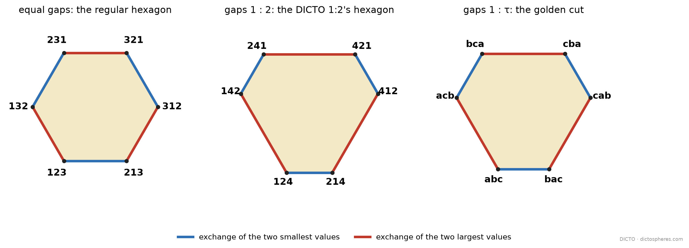
Proof. The sum of the coordinates does not change under reordering, so the six points lie in one plane. Exchanging the two smallest values moves a point by (b − a)(ei − ej) for the two positions i, j that hold them, a step of length √2(b − a); exchanging the two largest moves it by √2(c − b). Starting from (a, b, c) and making the two exchanges in turn returns to the start after six steps (the braid ring s₁s₂s₁ = s₂s₁s₂), so the six points are the corners of a hexagon with alternating sides. From (a, b, c) the six steps are (b − a)(1, −1, 0), (c − b)(1, 0, −1), (b − a)(0, 1, −1), (c − b)(−1, 1, 0), (b − a)(−1, 0, 1), (c − b)(0, −1, 1): each direction is the one before turned by 60° (dot product 1, lengths √2), so the hexagon is convex and every angle is 120°. Conversely, an equiangular hexagon is fixed up to congruence by its sides, since each side's direction is the previous one turned by 60°; sides alternating s and t thus give the hexagon of the gaps s/√2 and t/√2. Equal gaps give equal sides. ∎ (Checked symbolically, with the faces of the solids below computed from their hulls: key_lemma.py, log kept with the study.)
Either set of alternate sides extends to an equilateral triangle: the lines of the sides √2(c − b) give a triangle of side √2(2(b − a) + (c − b)) with corners of side √2(b − a) cut off, and the lines of the other three sides give the triangle with the roles exchanged. On the permutohedron of four values the hexagon sits on a face of an octahedron, and the corners cut off are the sides it shares with the squares, the outer gap. #88's two golden cuts of the octahedron are the two choices: the Greater (DICTO's Icosaxes), where the sides shared with the corners are the long ones, and the Lesser (the Unborn Axes), where they are the short ones.
Proof. The 2-faces are the ordered splits of the n positions into n − 2 blocks, each block holding values consecutive in size: one block of three and the rest single, or two blocks of two (Ziegler, Example 0.10, for 1, …, n; for arbitrary distinct values the faces are the same, Postnikov). If the moving values are three consecutive in size, vk, vk+1, vk+2, the face is the hexagon of Lemma 1. If they are two separate neighbouring pairs, the two exchanges commute and move in orthogonal directions, so the face is a rectangle with the two step lengths as sides. ∎
| solid | values | gaps | hexagons (Lemma 1) | four-sided faces | source |
|---|---|---|---|---|---|
| Kelvin's truncated octahedron, the 3D permutohedron | 1, 2, 3, 4 | 1, 1, 1 | regular | squares | #48 at x = 1 |
| DICTO 1:2 Truncated Octahedron | 1, 2, 4, 5 | 1, 2, 1 | truncated triangles, ratio 2 | squares (gaps 1, 1) | #105 |
| DICTO 2:1 Truncated Octahedron | −5, −1, 1, 5 | 4, 2, 4 | truncated triangles, ratio 2 | squares (gaps 4, 4) | #105 |
| the golden bond (Icosaxes) | −τ³, −1, 1, τ³ | 2τ, 2, 2τ | golden truncated triangles, ratio τ | squares | #48 at x = τ; #88 |
For the golden bond the gaps are 2τ, 2, 2τ because τ³ − 1 = 2τ; so its hexagons have sides in the ratio τ, the golden cut that #88 found on the octahedron's faces. Each row was checked by computing the faces from the hull (key_lemma.py). The golden cut is a gap ratio: a face is golden when the three values on it are spaced in the ratio τ. The DICTO 1:2 and 2:1 have similar hexagons, ratio 2, and differ in their squares (Chapter 2). The truncated triangles of #95, in a chiral family, are permutohedra of three values on a solid that is not itself a permutohedron.

DICTO: #20 The FUJI Family (the truncated triangle first used); #48 The Golden Split; #88 Every Platonic Solid Has Exactly Two Golden Cuts (the truncated triangle and its two golden cuts); #93 One Double Pyramid, Two Splits; #95 Pentagons for the Kites; #105 DICTO 1:2 Truncated Octahedron: The 4D Vacuus of the Permutohedron. G. M. Ziegler, Lectures on Polytopes, Springer (1995), Example 0.10 (the faces of the permutohedron); A. Postnikov, Permutohedra, associahedra, and beyond, IMRN 2009 (permutohedra of arbitrary values); H. S. M. Coxeter, Regular Polytopes (t{3}). That the faces of a permutohedron of arbitrary values are hexagons and rectangles is classical (Postnikov); the reading of the truncated triangle as the permutohedron of three values, and of DICTO's golden cuts and solids as gap ratios, is this book's.
The solids of DICTONIC's golden loop are the permutohedra of four values spaced symmetrically, and each fills space with its reciprocal, in one way only
Retold from #48 (DICTO DOI: 10.5281/zenodo.23596362), #105 (DICTO DOI: 10.5281/zenodo.24121177) and #93 (DICTO DOI: 10.5281/zenodo.23933666). Proposition 2.1 and the reading of the golden loop as symmetric spacings are new in this book.
The 24 orders of 1, 2, 3, 4 are the corners of Kelvin's truncated octahedron. Space the four values differently and the corners move, but the solid keeps its 6 four-sided faces and 8 hexagons (Chapter 1). Most spacings break its symmetry. This chapter shows which spacings keep all of it, and that those are exactly the solids of DICTONIC's golden loop.
Proof. Permuting the four coordinates maps the set of orders to itself: 24 symmetries. The solid is a truncated octahedron combinatorially, whose combinatorial symmetries number 48, so there are 24 or 48. A group of 48 orthogonal maps containing the tetrahedral group is the full octahedral group, which contains the central inversion x ↦ −x (mean at the origin); so all 48 occur exactly when the inversion is a symmetry, that is, when −v₁, …, −v₄ are again v₁, …, v₄: the values are symmetric about their mean. ∎ (Checked by computing the full symmetry group of the corners for four symmetric and three non-symmetric spacings: symmetry.py.)
Proof. The filling is #48, Theorem 4; the identification of #48's T(x) with the permutohedron of gaps x : 1 : x is #105, Theorem 4; the uniqueness is #93, Theorem A, where T(x) and T(1/x) are Pμ and Qμ with μ = 1 + x/(1 + x) (#90, Proposition 6). ∎

| x | T(x) | partner T(1/x) | source |
|---|---|---|---|
| → 0 | the octahedron | the cuboctahedron | #48; #53, Corollary 1 |
| 1/2 | DICTO 1:2 Truncated Octahedron (values 1, 2, 4, 5) | DICTO 2:1 Truncated Octahedron | #105 |
| 1 | Kelvin's truncated octahedron (1, 2, 3, 4) | itself | #48 |
| τ | Icosaxes (−τ³, −1, 1, τ³) | Unborn Axes | #48 |
This is why the loop runs only through symmetric spacings: each site of the two cube lattices in Theorem 2.2 has all 48 symmetries of the cube, so its cell must have them too, and by Proposition 2.1 that forces the values to be symmetric about their mean. Chapter 3 shows that the weight between the two kinds of site measures the spacing itself.

DICTO: #48 The Golden Split (Theorem 4); #53 The Global Web of Bonds (Corollary 1); #90 Golden on the Octahedron, Silver on the Cube (Proposition 6); #93 One Double Pyramid, Two Splits (Theorem A); #105 DICTO 1:2 Truncated Octahedron: The 4D Vacuus of the Permutohedron (Theorem 4, Figure 5). M. Koca, N. O. Koca, M. Al-Mukhaini and A. Al-Qanobi, arXiv:1506.04600 (2015), eq. 49 (T(x)); W. Thomson (Lord Kelvin), Phil. Mag. (5) 24 (1887) 503–514. The filling and its uniqueness are #48's and #93's; the reading of the loop as the symmetric spacings of four values is this book's.
The weight that drives the web of bonds is the relative difference of the gaps between four values
Retold from #52 (DICTO DOI: 10.5281/zenodo.23629252), #53 (DICTO DOI: 10.5281/zenodo.23631140) and #90 (DICTO DOI: 10.5281/zenodo.23931136), with #105. The reading of the weight as the spacing, d = (g − m)/(g + m), is new in this book.
In the web of bonds (#52, #53) one number drives everything: the weight difference d between the two kinds of site of the body-centred cubic arrangement. Sliding d from −1 to 1 moves the shared walls, and the cells pass from the octahedron through the DICTO 1:2 (d = −1/3), Kelvin's truncated octahedron (d = 0), the golden bond (d = 1/τ³) and the DICTO 2:1 (d = 1/3) to the cuboctahedron; #52 and #53 call this the golden loop. Chapter 2 read the cells as permutohedra of four values; this chapter shows that the weight itself is a statement about those values: it measures how unevenly they are spaced.
d = (g − m) / (g + m),
and the cell of each B site is the permutohedron whose gaps are in the reciprocal ratio, m, g, m (the same formula with −d).Proof. By #90 (Proposition 6) the A cell is C ∩ μC* with μ = (3 + d)/2, that is {|yi| ≤ 1, |e·y| ≤ (3 + d)/2} for the eight e = (±1, ±1, ±1): the walls towards the six nearest A sites 2ei and the eight nearest B sites e. (No other site cuts it: the power cell lies inside this region, and these regions for A and B already fill space by #90, so the two are equal; checked also exactly, corner by corner, against every site within ±8 at d = −99/100, −1/3, 0, 1/τ³, 1/3 and 99/100.) The permutohedron of −q, −p, p, q is, after the isometry of #105 (Theorem 4), the hull of the signed orders of (p + q, q − p, 0): its squares lie on the planes |yi| = p + q and its hexagons on |e·y| = 2q. Scaling to p + q = 1 and matching 2q = (3 + d)/2 gives q = (3 + d)/4 and p = (1 − d)/4, so the gaps are g = q − p = (1 + d)/2 and m = 2p = (1 − d)/2, and (g − m)/(g + m) = d. Changing d to −d exchanges g and m. ∎ (Checked exactly at d = −1/3, 0, 1/τ³, 1/3 and 2/7, corner by corner: weight_map.py, log kept with the study.)

| stop | weight d | gaps g : m : g (A cell) | A cell | B cell |
|---|---|---|---|---|
| Kelvin | 0 | 1 : 1 : 1 | Kelvin's truncated octahedron | the same |
| DICTO 1:2 / 2:1 | −1/3 | 1/2 : 1 : 1/2 (values 1, 2, 4, 5) | DICTO 1:2 Truncated Octahedron | DICTO 2:1 Truncated Octahedron |
| the golden bond | 1/τ³ | τ : 1 : τ | Icosaxes | Unborn Axes |
At d = 0 (equal weights, the body-centred cubic Voronoi tiling) the gaps are equal: Kelvin's cell. The partner T(1/x) of #48 is the same rule seen from the other kind of site. The golden bond is the golden spacing. At d = (τ − 1)/(τ + 1) = 1/τ³ the outer gaps are τ times the middle one; by Chapter 1 every hexagon of the cell is then a golden truncated triangle. The DICTO pair is the spacing 1 : 2. At d = −1/3 (μ = 4/3) the A cell is the permutohedron of 1, 2, 4, 5 and the B cell that of −5, −1, 1, 5; by #93 (Theorem A, P4/3 and Q4/3) they fill space in this one way only.
In #48's parameter, x = (1 + d)/(1 − d) is the gap ratio g/m, and the weight is d = (x − 1)/(x + 1), the form given in #53 (Corollary 1); #52 states the same walk at the scale L = φ (φ = τ, the golden ratio), where the weight difference carries the factor φ²/4; #90's μ is (3 + d)/2.
DICTO: #48 The Golden Split (Theorem 4, T(x) and T(1/x)); #52 The Web of Bonds (the power-diagram walk, Main theorem); #53 The Global Web of Bonds (Corollary 1, λ = (x − 1)/(x + 1)); #90 Golden on the Octahedron, Silver on the Cube (Proposition 6, the cells C ∩ μC*); #93 One Double Pyramid, Two Splits (Theorem A); #105 (Theorem 4, the isometry); Chapter 1 of this book (the truncated triangle). F. Aurenhammer, Power diagrams: properties, algorithms and applications, SIAM J. Comput. 16 (1987) 78–96; W. Thomson (Lord Kelvin), Phil. Mag. (5) 24 (1887) 503–514 (the truncated octahedron as the body-centred cubic cell). The power-diagram walk and its cells are #52's, #53's and #90's; reading the weight as the relative difference of the gaps between four values is this book's.
Fourteen half rhombic dodecahedra close into the chamfered cube, a zonohedron that is not a permutohedron, and with cube pyramids it fills space
New in this book, from DICTO's Hemi RD build in Polyhedraverse (11 November 2026); background in #58 (DICTO DOI: 10.5281/zenodo.23665944) and #87 (DICTO DOI: 10.5281/zenodo.23896015).
Chapters 1 to 3 found DICTO's solids among the permutohedra. This chapter follows one of his builds that leads out of the family. The rhombic dodecahedron is a cube with a square pyramid on each of its six faces, and cut through six of its corners it falls into two halves (a Hemi RD, volume 1 when the whole has volume 2). The cut face is an elongated hexagon (DICTO's term): sides 1, √3/2, √3/2, 1, √3/2, √3/2, the long sides opposite each other, the very hexagon that will appear on the chamfered cube. In Polyhedraverse DICTO built a Hemi RD and attached thirteen more to its faces. He saw three things in the result: its hexagons are irregular, with the long sides opposite; its six open squares could be filled with pyramids cut from a cube; and those squares echo the squares of the permutohedron. This chapter proves what he saw and shows where the echo holds and where it stops.
Proof. The volume of a zonotope is the sum of |det| over its triples of generators: 1 (the three axes) + 6 (two axes with one diagonal) + 6 (one axis with two diagonals) + 2 (three diagonals) = 15. DICTO's build, read from his world export with its exact transforms, has 14 pieces of volume 1 and its hull matches Z to 10−9; the missing volume 1 = 6 · ⅙ is the six pyramids, each found empty under its square (analyse_build.py). This identification of the build is numerical (hull to 10−9, volumes to 10−6, the empty pyramids by sampling); the volume of Z is exact, and an exact reading of the build in rational coordinates is open. Theorem 4.3 is stated for Z and the cube pyramids and is exact. ∎
Corollary 4.2. The chamfered cube is not a permutohedron. By Chapter 1, every 2-dimensional face of a permutohedron is a truncated triangle (sides alternating) or a rectangle; the hexagons of Z are elongated hexagons, their long sides opposite each other as DICTO saw, not alternating, so they are not truncated triangles. The difference is one of symmetry (DICTO): a regular hexagon has both a third-turn and a half-turn; the truncated triangle keeps the third-turn and loses the half-turn (opposite sides unequal), the elongated hexagon keeps the half-turn (opposite sides equal and parallel, two mirrors, like a rectangle) and loses the third-turn. Every face of a zonohedron has the half-turn, so the chamfered cube's hexagons had to be elongated.
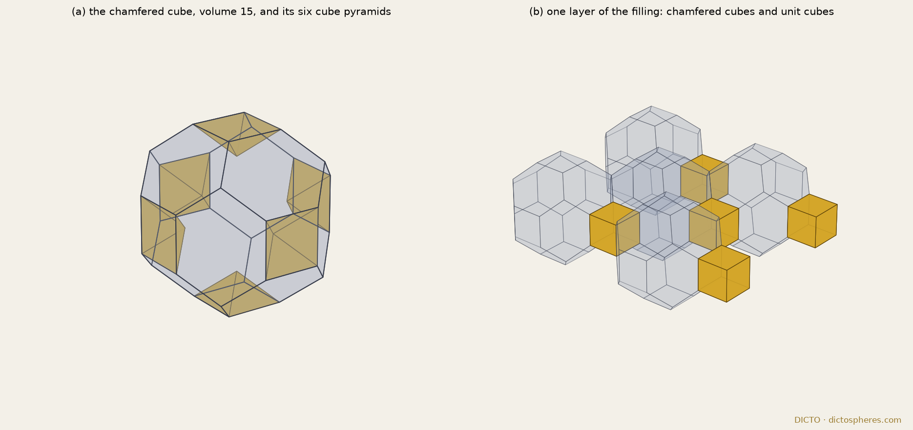
Proof. No two pieces overlap: each of the 487 pairs within reach is separated by an exact plane (a face normal of either piece or the cross product of an edge direction of each), checked in rational arithmetic. Each lattice point carries volume 15 + 1 = 16, the volume of a cell of L, so the pieces have density 1; a packing of convex bodies with density 1 leaves no gap. ∎ (exact_fill.py)
Remark 4.4. Z alone does not fill space by translations: round a hexagon's long sides its zone has 8 faces, and a convex body that tiles by translations has every belt of 4 or 6 faces (Venkov 1954; McMullen 1980). The cubes are needed.
Where the echo holds. The six squares of Z sit on the cube axes exactly where the 3D permutohedron has its six squares, and in the 4D permutohedron those squares are where a second kind of cell, the hexagonal prism, joins, as here a second kind of piece, the cube, does. The hexagons differ: twelve elongated hexagons on the rhombic dodecahedron's face directions here, eight truncated triangles on the body diagonals there. The echo is in the squares, not in the hexagons.
DICTO: the Hemi RD build in Polyhedraverse (11 November 2026; the world export with exact transforms is in the study); #105 DICTO 1:2 Truncated Octahedron: The 4D Vacuus of the Permutohedron (the 4D permutohedron's prisms); Chapter 1 (the face lemma). B. A. Venkov, On a class of Euclidean polyhedra, Vestnik Leningrad. Univ. Ser. Mat. Fiz. Him. 9 (1954) 11–31; P. McMullen, Convex bodies which tile space by translation, Mathematika 27 (1980) 113–121, doi:10.1112/S0025579300010007.
The exchange of neighbours, from the orderings of five things to flat-faced scutoid shells, their polar flip and the cycle that fills space
Re-edited from DICTO's draft Scutoids: Layers, Shells and Cycles (10 November 2026, not published) and #104 (DICTO DOI: 10.5281/zenodo.24111864). Section 5.1 is new in this book.
Chapter 4 found where the permutohedron stops. This chapter returns to its edges, the exchanges of neighbours, and follows them into the cells of living tissue. A scutoid is a cell whose outline changes on the way through: two cells that touched stop touching, and two others start (Gómez-Gálvez et al. 2018). In this book's language it is an exchange of neighbours, the move that joins two orderings on an edge of the permutohedron, seen in a slice.
Proof. Exchanging k (at position p) and k + 1 (at position q) changes f by up − uq, negative exactly when p < q. A corner with two edges below is where the slice makes an exchange of neighbours (#104, Theorem 1); with one, a cell is born; with three, one dies. The counts are the Eulerian numbers, checked by listing all 120 orderings for three directions u (swap_orderings.py). ∎
Take the hexagonal tiling, shrink every second vertical edge of every second row to a point and reopen it across: a cell that is a hexagon below and a pentagon above, with the Y-corner halfway and 13 faces, every one of them flat (Figure 5.1).
Why flat. Each core edge and the middle edge above it are perpendicular to the same mirror plane, so they are parallel and the side face between them is a flat trapezoid; a shrinking edge gives a triangle. Checked: every face flat to 10⁻¹³, the 32 volumes add to V(outside) − V(core).


A block of eight. Eight convex scutoids, every one exchanging pentagon and hexagon between its ends, fill one flat layer, and the layers stack straight up; the pieces are chunky (sphericity 0.825–0.835, about that of a cube). Turned on its side the same group builds a wall whose face is a mosaic of pentagon and hexagon ends, sloped back like an ishigaki castle wall (Figures 5.5, 5.6).


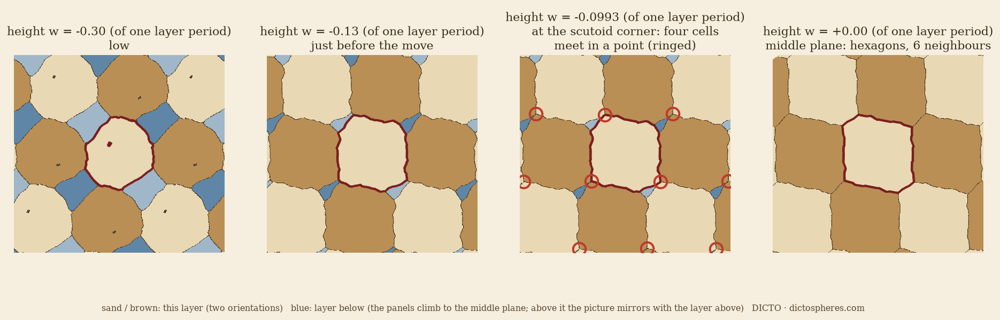
Back to the book. In the 4D permutohedron the exchanges of neighbours come one at a time, 66 of them, each at an ordering (Proposition 5.1); round the truncated icosahedron they come all at once, 30 in one shell, held flat by its mirrors (Theorem 5.2). Chapter 7 counts them in four dimensions for every simple polytope.
P. Gómez-Gálvez, P. Vicente-Munuera, A. Tagua, C. Forja, A. M. Castro, M. Letrán, A. Valencia-Expósito, C. Grima, M. Bermúdez-Gallardo, Ó. Serrano-Pérez-Higueras, F. Cavodeassi, S. Sotillos, M. D. Martín-Bermudo, A. Márquez, J. Buceta and L. M. Escudero, Scutoids are a geometrical solution to three-dimensional packing of epithelia, Nature Communications 9 (2018) 2960, doi:10.1038/s41467-018-05376-1. DICTO: Scutoids: Layers, Shells and Cycles (draft of 10 November 2026; studies of 17 October, 6–7 and 10 November); #104 Scutoid Tissues in Four Dimensions (Theorem 1 and the Eulerian counts of Theorem 1′).
The permutohedron of five values: its Vacuus and its heart, its sweep as a tissue, the rosettes, the walls of the Swap Rule and the mirrors of the Queens.
The 120 orderings of five values, the 65 central slices of the 4D permutohedron, and the five DICTO 1:2 Truncated Octahedra at its heart
Re-edited from #105 (DICTO DOI: 10.5281/zenodo.24121177), Sections 1–3. Section 6.4 comes from #107 (DICTO DOI: 10.5281/zenodo.24126800) and #108 (DICTO DOI: 10.5281/zenodo.24126802).
Chapter 5 met the exchange of neighbours one ordering at a time. Here all 120 orderings of five values are taken together: as the corners of the 4D permutohedron, joined by the exchanges, and cut through the centre.
The 4D permutohedron is the convex hull of the 120 points (p₁, …, p₅) whose coordinates are 1, …, 5 in some order; it lies in the 4-space p₁ + … + p₅ = 15, centred at (3, 3, 3, 3, 3). It is simple (four edges at each corner) and has 240 edges, 150 two-dimensional faces (60 hexagons, 90 squares) and 30 cells: 10 three-dimensional permutohedra of four consecutive values (one coordinate fixed at 1 or at 5; classically the truncated octahedron) and 20 hexagonal prisms. Its edges join orders that differ by swapping two neighbouring values, so its skeleton is the web above: four exchanges at every knot, in ten directions. The following facts are classical and were recounted exactly (web_of_bonds.py): the number of exchanges between two orders is the number of pairs they put in opposite order; 54321 is farthest from 12345, ten exchanges away, along 768 shortest routes (Stanley's count of reduced words of the longest permutation); the 2-faces are the web's rings, a square for two swaps of disjoint value pairs and a hexagon for the braid ring sksk+1sk = sk+1sksk+1. In #104 the same solid was swept by a moving 3-space: 26 cells are born, 66 pairs swap and 26 cells die, and these are the numbers of orders with one, two and three descents (1, 26, 66, 26, 1): the h-vector of the permutohedron is the Eulerian numbers (Postnikov, Reiner and Williams 2008).
The Vacuus of a centrally symmetric polytope is the set of hyperplanes through its centre spanned by its ridges (the faces one dimension below the cells), each ridge lying in exactly one; a slice is the polytope cut by one of them. DICTO's Vacuus solids (#87) are built from such central slices (there as fins, one per edge, which for these solids fill central discs): the octahedron from three squares through its centre that carry all its edges, the cuboctahedron from four hexagons. One dimension up the slices are 3D and carry the 2-faces. A 2-face of the 4D permutohedron does not pass through the centre, so together with the centre it spans exactly one 3-space through the centre: its central slice. The 4D Vacuus is the set of these slices.
A 2-face is an ordered split of the positions {1, …, 5} into three blocks B₁, B₂, B₃ of sizes (a, b, c): the positions in B₁ hold the a smallest values in any order, those in B₂ the next b, those in B₃ the largest c. Its central slice has the normal vector that takes the value c₁ = bc(b + c) on B₁, c₂ = −ac(a + 2b + c) on B₂ and c₃ = ab(a + b) on B₃ (it is orthogonal to (1, …, 1), constant on each block, and orthogonal to the vector of centred block sums S₁ = −a(b + c)/2, S₂ = b(a − c)/2, S₃ = c(a + b)/2, so its hyperplane passes through the face; checked against exact elimination for every 2-face).
| slices | split (a, b, c) | normal (values on B₁ | B₂ | B₃) | slice shape | edge lengths² | faces of the 4D solid carried |
|---|---|---|---|---|---|
| 30 | (1, 2, 2) | (8 | −7 −7 | 3 3) | 32 corners, 52 edges; 14 four-sided faces (2 of them squares) + 8 hexagons | eight values, 13/18 to 8 | 2 squares |
| 20 | (1, 1, 3) | (6 | −9 | 1 1 1) | truncated-octahedron type: 6 rectangles + 8 hexagons (2 regular) | 2 and 56/9 | 2 hexagons |
| 10 | (1, 3, 1) | (3 | −2 −2 −2 | 3) | 24 corners, 42 edges; 18 four-sided faces (6 squares, 12 trapezoids) + 2 regular hexagons | 2, 4, 8 | 2 hexagons |
| 5 | (2, 1, 2) | (1 1 | −4 | 1 1) | the DICTO 1:2 Truncated Octahedron (permutohedron of 1, 2, 4, 5): 6 squares + 8 hexagons | 2 and 8 | 6 squares |
Proof. The normal formula shows that a slice depends only on the blocks and the values (c₁, c₂, c₃); since c₁ > 0 > c₂, for five values two splits give the same slice only if they are reverses of each other (B₃, B₂, B₁), or, when a = c, have the same middle block (for an even number of values there is one more coincidence, Theorem 11.1). Counting: splits (1, 1, 3) and (1, 2, 2) give 5!/(1!1!3!) = 20 and 5!/(1!2!2!) = 30 slices; (1, 3, 1) and (2, 1, 2) give C(5, 3) = 10 and C(5, 1) = 5; in all 65, and 30·2 + 5·6 = 90 squares, 20·2 + 10·2 = 60 hexagons. Slices with the same split are images of one another under a permutation of the coordinates, so they are congruent. The shapes were computed in exact rational arithmetic: corners are the solid's corners on the slice and the points where edges cross it; every face proposed by a hull routine was confirmed exactly (all its corners on one plane, every other corner strictly on one side), and every shape has Euler number 2. ∎
An earlier floating-point count split the 30 congruent slices of the first row into several apparent types; the exact computation above supersedes it.
The five slices of the last row are the slices pi = 3: the middle value held in one place while the other four take 1, 2, 4, 5 in every order. Each is the 3D permutohedron of the values 1, 2, 4, 5: the DICTO 1:2 Truncated Octahedron, a truncated octahedron in shape (the same faces meeting in the same way as Archimedes', but not his equal-edged solid) with squares of side 1 and hexagons whose sides are 1 and 2 in turn (√2 and 2√2 in these coordinates), and it carries the six squares of the 4D solid in which the middle value stays put. These five are the heart of the Vacuus (Figure 6.2; the orderings of 1, 2, 4, 5 on the solid are drawn in Figure 1.2). Sweeps of sections parallel to a cell, which pass through such a slice, are known (J. Bowers; Galoomba, Polytope Wiki); we found none that names the central one as the permutohedron of 1, 2, 4, 5 or shows the five together.
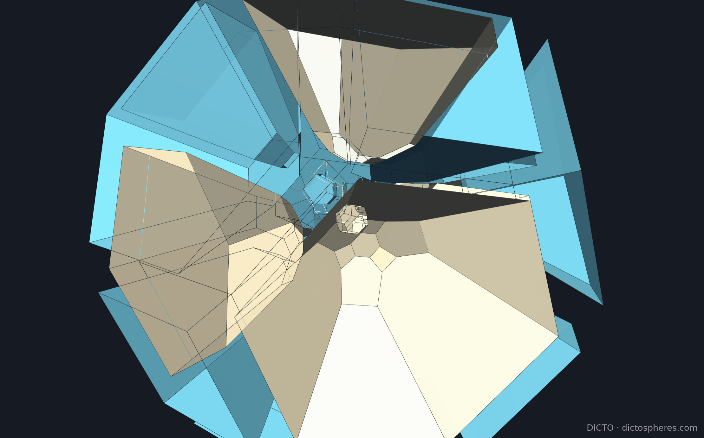
Proof. A point lies in the permutohedron exactly when its coordinates sum to 15 and its k largest coordinates sum to at most 5 + 4 + … (the k largest values), for every k (majorization; Rado 1952, after Hardy, Littlewood and Pólya). With pi = pj = 3 and the other three q₁, q₂, q₃ summing to 9, these conditions reduce to 1 ≤ qm ≤ 5: a hexagon with corners the orders of (1, 3, 5), each at distance √8 from the centre and from its neighbours. The plane meets no corner or edge of the solid; its six corners are where it pierces 2-faces, which was confirmed exactly by intersecting the plane with all 150 faces. Three conditions pi = pj = pk = 3 leave q₁ + q₂ = 6 with 1 ≤ q ≤ 5, a segment; four leave the centre. ∎

The heart nests the dimensions inside one another: the 4D permutohedron of 1, …, 5 holds at its centre, five times, the 3D permutohedron of the four values that remain when the middle one is taken out; in the same way the hexagon of the orders of 1, 2, 3 holds the segment between the orders of 1 and 3. This works whenever the number of values is odd, so that there is a middle value to hold still. (For any value v the hyperplane pi = v meets no edge inside it, since an edge changes two coordinates from k, k + 1 to k + 1, k through non-integers; so the slice pi = v is the permutohedron of the other n − 1 values, and it passes through the centre exactly when v is the middle value.)
None of the 65 slices is a mirror of the permutohedron's symmetry group: its seed (1, 1, 1, 1) rings every node of the chain 3–3–3, so by the Mirror Law (#107, Theorem 1) no 2-dimensional face lies on a mirror. The five heart slices of Theorem 6.2 carry six faces each; every other slice carries one face and its opposite, two. Across all the polytopes of the seven reflection-group chains, slices off the mirrors that carry three or more faces occur in four dimensions only here and in the runcinated 5-cell, which shares these five (#108, Observation 4): the heart of the 4D Vacuus is the permutohedron's own, not its group's.
DICTO: #105 DICTO 1:2 Truncated Octahedron: The 4D Vacuus of the Permutohedron (Sections 1–3, Figures 1–4); #107 The Vacuus of the Queens (Theorem 1); #108 The Atlas of the Chains (Observation 4); #87 (the Vacuus). M. Koca, N. O. Koca, M. Al-Mukhaini and A. Al-Qanobi, arXiv:1506.04600 (2015).
The boundary of every simple 4-polytope is a scutoid tissue counted by its h-vector; the permutohedron as the worked example; the balance law between the Queens and in every chain
Re-edited from #104 (DICTO DOI: 10.5281/zenodo.24111864), Section 1. Sections 7.2 and 7.3 come from Chapter 5 and #108 (DICTO DOI: 10.5281/zenodo.24126802).
Chapter 5 found the exchange of neighbours at 66 orderings of five values. This chapter shows that the same count, read as an h-vector, governs every simple four-dimensional polytope swept by a hyperplane, and that between the Queens the exchanges balance.
A 4-polytope is simple if each corner lies in exactly four cells (equivalently, four edges). Take a generic height, a linear function with different values at all corners. Slicing at height t gives a 3-polytope whose faces are the cross-sections of the cells that cross the hyperplane; two cells are neighbours in the slice when their shared 2-face crosses it. At a simple corner the faces through it correspond to the subsets of its four edges, and a face has the corner as its top iff all its edges there go down.
Proof. Between corner heights the slice keeps its combinatorics. At a corner v let e₁, …, e₄ be its edges and Fj the cell not containing ej. Just below v the slice cuts the downward edges, just above the upward ones. i = 1 (e₁ down): above v the slice cuts e₂, e₃, e₄, and the cell containing all three, F₁, appears as a small triangle (v is its lowest corner). i = 2 (e₁, e₂ down): below v the slice's local edge joins the crossings of e₁ and e₂ and lies in F₃ ∩ F₄, the 2-face spanned by e₁ and e₂; v is its top, so above v the two cells no longer share a face crossing the hyperplane (two cells of a polytope share at most one 2-face); symmetrically F₁ ∩ F₂, spanned by e₃, e₄, has v as its bottom and F₁, F₂ begin to touch. No other face through v has v as top or bottom, so nothing else changes. i = 3 is i = 1 upside down. The number of corners with i downward edges is hi, independent of the generic height (the Morse-type count of the h-vector, with hi = h4−i; McMullen; Ziegler, Lectures on Polytopes, Lecture 8; Buchstaber–Panov, Toric Topology, ch. 1). ∎ In the dual triangulation of the slice's boundary (one vertex per cell) the three events are the bistellar flips 1-3, 2-2 and 3-1 (Pachner; Lickorish); the theorem is classical in that language.
Classical and new. Classical: that the number of corners of index k is hk for every generic linear function (McMullen 1970; the line shellings of Bruggesser and Mani 1971; Ziegler, Lecture 8), the Dehn–Sommerville relations, and the bistellar moves. New here: the reading of the three indices as the birth, scutoid swap and death of the cells of a tissue, with h₂ counting the swaps; the counts of Theorem 7.2; the balance law, Theorem 7.4; and the walls of Chapter 9.
Remark (the g-theorem in tissue terms). For a simple 4-polytope the g-theorem (McMullen's conditions, proved by Stanley 1980 and Billera and Lee 1981) gives g₂ = h₂ − h₁ ≥ 0 and g₂ ≤ C(h₁, 2). So every generic sweep of a simple 4-polytope has at least as many swaps as births, and at most births + C(births, 2): for the three polytopes of Theorem 7.2, 366 ≥ 116, 966 ≥ 716 and 2166 ≥ 716.
Proof. A ridge Fa ∩ Fb through v is spanned by the d − 2 edges other than ea, eb; it has v as its top iff they all go down (so i = d − 2 and {a, b} are the up edges), as its bottom iff they all go up (i = 2); otherwise it crosses on both sides. ∎ Confirmation (floating point, predictions first, three random directions each): the 5-cube, h = (1, 5, 10, 10, 5, 1): 5 births, 10 contacts gained, 10 lost, 5 deaths; the 5D permutohedron (the 720 orderings of 1, …, 6), h = the Eulerian numbers (1, 57, 302, 302, 57, 1): 57, 302, 302, 57; the 4D permutohedron, (1, 26, 66, 26, 1): 26 births, 66 swaps, 26 deaths. No regularity is needed: three random simple 4-polytopes (polars of hulls of 24, 36, 54 random points near the 3-sphere, no symmetry) gave exactly the predicted (20, 57, 20), (32, 103, 32), (50, 142, 50). Remark. At a corner of a non-simple polytope the moves clump; a generic small shift of the facet hyperplanes makes any polytope simple and splits each clump into births, swaps and deaths.
Remark (the indices). In a simple d-polytope: index 1, a facet is born; index 2, a contact is gained; index d − 2, a contact is lost; index d − 1, a facet dies. Only for d = 4 do the gain and the loss share an index, and make the swap; for d = 5 they separate (2 and 3); for d ≥ 6 the indices 3, …, d − 3 touch only lower faces. For d = 3 two of them coincide the other way: index 1 is both a birth and a contact lost, and index 2 both a contact gained and a death (the slice polygon gains a side where two sides stopped meeting, and loses one where two begin to meet).
Proof. Their vertex figures are tetrahedra; h₁ = f₃ − 4 and h₂ = f₀ − 2 − 2h₁ follow from the Dehn–Sommerville relations; then Theorem 7.1. Confirmation: computer sweeps along generic directions give the predicted counts (the bitruncated 600-cell along nine directions). The four cells at the lowest corner are in the slice from the start and four remain at the top corner, so births + 4 = deaths + 4 = cells (120 = 116 + 4; 720 = 716 + 4). ∎
Proof. Six cells meet at each corner (one icosahedron and five truncated tetrahedra); the vertex figure is a pentagonal pyramid, whose graph is the wheel W₅ with 10 edges. A pure swap needs the down/up split of the vertex figure's vertices to leave exactly one edge inside each side; but the largest cut of W₅ has 7 edges (the hub with two non-adjacent rim vertices), so at least three edges lie inside the two sides, each a contact that is lost or gained. ∎ In five computer sweeps the moves were 1 ↔ 3, 2 ↔ 0 and 1 ↔ 0 clumps.
Interpretation. Biologists know the same contrast in living tissue: a T1 transition involves four cells at a point, while a rosette, five or more cells meeting at one point and resolving together, reshuffles several neighbours at once (Blankenship, Backovic, Sanny, Weitz and Zallen 2006). In that language the truncated 600-cell, with its groups of five truncated tetrahedra round each icosahedron's corner, is a rosette tissue, and the bitruncated 600-cell, one stage on, a T1 tissue.
| polytope | corners | cells | cells per corner | births | scutoid swaps | deaths |
|---|---|---|---|---|---|---|
| 120-cell (Red Queen) | 600 | 120 dodecahedra | 4 | 116 | 366 | 116 |
| truncated 120-cell | 2400 | 120 truncated dodecahedra + 600 tetrahedra | 4 | 716 | 966 | 716 |
| bitruncated 600-cell (the midpoint) | 3600 | 120 truncated icosahedra + 600 truncated tetrahedra | 4 | 716 | 2166 | 716 |
| truncated 600-cell | 1440 | 120 icosahedra + 600 truncated tetrahedra | 6 | rosette moves only: ≥ 3 contacts change at every corner (Lemma 7.3) | ||
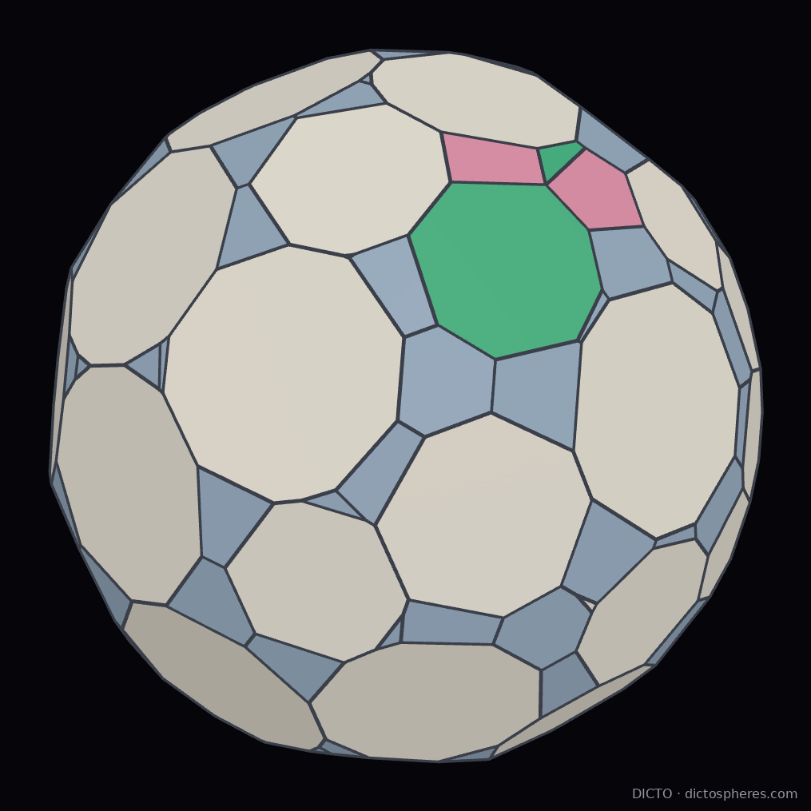
In symmetric directions many corners share a height and the events come in batches; along cell-first the bitruncated 600-cell's pairs that let go and pairs that meet are equal in total (1782 each) and at every height where no cell appears or disappears.
Proof. With 2 W and 2 R at a corner, the pair that lets go and the pair that meets are complementary: W–W ↔ R–R or W–R ↔ W–R. Every R–R contact appears exactly once in a sweep: at the first corner (one), at the birth of an R cell after the start (one each, R cells − 2 of them) or by a W–W → R–R swap; so these swaps number (R–R faces) − (R cells − 2) − 1; by deaths the same count goes the other way. Bitruncated 600-cell: 720 − 118 − 1 = 601; the triangles check it, 1200 = 601 + 598 + 1, and 2166 − 1202 = 964. Confirmed in nine directions. ∎
Interpretation. The Queens are the two ends of a channel and this layer, where their cells meet, is where they communicate, equally in both directions.
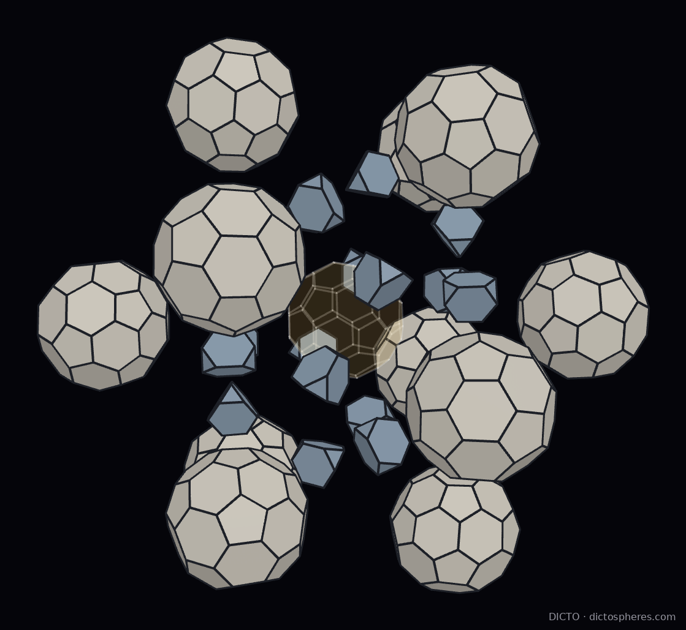
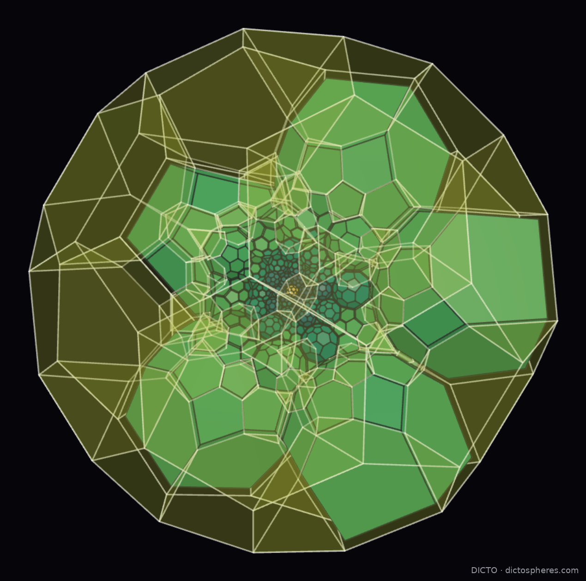
For the 4D permutohedron Theorem 7.1's three moves fall on the orderings (Chapter 5, Proposition 5.1): a corner with one edge below, where one value k stands to the left of k + 1, gives a birth (26 of them); two, an exchange of neighbours (66); three, a death (26); with the first and last corner, the Eulerian numbers 1, 26, 66, 26, 1 are its h-vector. Its 30 cells are of two types, ten permutohedra and twenty hexagonal prisms, and every corner sees one cell of each of the four node types of the chain, two permutohedra and two hexagonal prisms (#108, Section 4: the omnitruncated 5-cell), so the balance law below applies to it as well: its three kinds of exchange are each matched by their reverses, 6, 16 and 11 each way.
Theorem 7.4 is one case of a law for every simple 4-polytope whose corners all see the same cell types (#108, Theorem 1): every kind of exchange X → Y is matched by Y → X, in every sweep direction, with the count in(X) = NX − Σ cX + pX. At the middle of each four-node chain the balanced count is the number of independent loops of the chain's regular polytope, E − V + 1 (#108, Theorem 3): 6 for the 5-cell, 17 for the tesseract, 73 for the 24-cell and 601 for the 600-cell, the 601 of Theorem 7.4.
DICTO: #104 Scutoid Tissues in Four Dimensions (Section 1, Theorems 1, 1′, 2, 4, Lemma 5, Figures 1–3); #108 The Atlas of the Chains (Theorems 1 and 3, Section 4); Chapter 5 (Proposition 5.1). P. McMullen, The maximum numbers of faces of a convex polytope, Mathematika 17 (1970) 179–184; H. Bruggesser and P. Mani, Shellable decompositions of cells and spheres, Math. Scand. 29 (1971) 197–205; P. Gómez-Gálvez et al., Nature Communications 9 (2018) 2960, doi:10.1038/s41467-018-05376-1.
Which uniform 4-polytopes sweep as clean scutoid tissues and which only as rosettes, read from the Coxeter chain
New in this book, from #104 (DICTO DOI: 10.5281/zenodo.24111864), Lemma 5, and the Atlas of #108 (DICTO DOI: 10.5281/zenodo.24126802).
In a simple 4-polytope four cells meet at every corner, and a sweeping hyperplane changes the tissue one move at a time (Chapter 7): a birth, a death, or one exchange of neighbours. Where more than four cells meet at a corner, several contacts change at once; living tissue has the same event, a rosette, where five or more cells meet at a point (Blankenship et al. 2006). Which uniform polytopes give clean tissues and which give rosettes can be read straight from the Coxeter chain.
Proof. The stabiliser of the corner x is WU. The edges at x of type i ∈ S go from x to its mirror image across node i's mirror, and their directions form the WU-orbit of the root αi; the stabiliser of αi in WU is generated by the unringed nodes orthogonal to it, U ∖ N(i). Summing the orbit sizes gives e. ∎ The count agrees with the measured number of edges at a corner for all 81 polytopes of the Atlas (all seeds of zeros and ones of A3, B3, H3, A4, B4, F4, H4).
Example. For a regular polytope only an end node is ringed, so e = |WU| / |WU ∖ N|: the 600-cell has e = 120/10 = 12 (its corner figure is the icosahedron), the 120-cell e = 24/6 = 4 (simple). For the seed (0, 1, 0, 0) node 2 has unringed neighbours on both sides and e = 2 · 6 / 2 = 6 in B4, F4 and H4: not simple, although each unringed piece alone looks harmless.
| group | clean (simple): seeds | rosettes: seeds (edges at a corner) |
|---|---|---|
| A4 | 5-cell, truncated, bitruncated, cantitruncated, omnitruncated (the 4D permutohedron) | rectified (6), cantellated (6), runcinated (6), runcitruncated (5) |
| B4 | tesseract, truncated tesseract, bitruncated tesseract, cantitruncated tesseract and 16-cell, omnitruncated | 16-cell (6), rectified tesseract (6), 24-cell as rectified 16-cell (8), truncated 16-cell (5), cantellated (6), runcinated (6), runcitruncated (5) |
| F4 | truncated, bitruncated, cantitruncated, omnitruncated 24-cell | 24-cell (8), rectified (6), cantellated (6), runcinated (8), runcitruncated (5) |
| H4 | 120-cell, truncated 120-cell, bitruncated 600-cell, cantitruncated 120- and 600-cell, omnitruncated | 600-cell (12), rectified 600-cell (10), truncated 600-cell (6), rectified 120-cell (6), cantellated (6), runcinated (6), runcitruncated (5) |
Read from Theorem 8.1 and the Atlas (#108, Section 4). Every clean tissue obeys the balance law of Chapter 7 (#108, Theorem 1). The truncated 600-cell, a rosette tissue with six edges at a corner, has no pure exchange of neighbours at all (#104, Lemma 5).
A rosette at a corner with e edges is a bistellar move on more than four cells at once. The Atlas gives the ledger of every clean tissue, and the same sweeps on the rosette tissues are the next computation.
DICTO: #104 Scutoid Tissues in Four Dimensions (Lemma 5); #108 The Atlas of the Chains (Theorem 1, Section 4); Chapter 7. J. T. Blankenship, S. T. Backovic, J. S. P. Sanny, O. Weitz and J. A. Zallen, Multicellular rosette formation links planar cell polarity to tissue morphogenesis, Developmental Cell 11 (2006) 459–470, doi:10.1016/j.devcel.2006.09.007. H. S. M. Coxeter, Regular Polytopes, 3rd ed., Dover (1973); J. E. Humphreys, Reflection Groups and Coxeter Groups, Cambridge University Press (1990).
The Swap Rule of close packing below s = 1/4, proved stacking by stacking, and its walls as exchanges of neighbours one dimension up
Re-edited from #104 (DICTO DOI: 10.5281/zenodo.24111864), Sections 2 and 3, which prove below s = 1/4 the Swap Rule of #61 (DICTO DOI: 10.5281/zenodo.23682596).
The exchanges of neighbours of Chapters 5 and 7 have a physical home: the close packing of spheres, where #61's Swap Rule says which pieces each layer holds. This chapter gives #104's proof of the rule below s = 1/4 and reads its walls as exchanges of neighbours one dimension up.
Setup (#61, The Swap Rule). Layers of balls (spacing 1 in a layer) are stacked in a word in A, B, C with layer distance d, d² = (2/3)s (s = 1: close packing). Between two layers lie octahedral and tetrahedral holes; space is divided among the holes by power distance |x − p|² − w, w = 0 for an octahedral hole and w = λ for a tetrahedral one, with λ in #61's range −1/4 − s/8 ≤ λ ≤ 3s/8 (for s ≤ 1/4). A layer is c if its two neighbours differ, h if they are equal. A hole's piece in the gap between layers k and k + 1 is keyed by its role (octahedral, or one of the two tetrahedral kinds) and the types of the four layers k − 1, k, k + 1, k + 2; the types of the two inner layers are (t | t′), the two outer ones the context. V(t | t′) is the piece's volume with the context held fixed. #61 proved V(c|h) + V(h|c) = V(c|c) + V(h|h) when s ≥ 1/4.
The four-layer condition. A piece's context is its role (octahedral, or one of the two tetrahedral kinds) together with the types, c or h, of the four layers k − 1, k, k + 1, k + 2 round its gap. A stacking satisfies the four-layer condition at (s, λ) when each of its pieces is determined, up to a motion, by its context. The six stackings below contain all sixteen contexts, and their pieces are computed directly; for any other stacking Theorem 9.1 assumes the condition. Below λ = −9s/8 it fails: a piece reaches two gaps.
Proof (exact, computer-assisted). s enters only the vertical metric, so every power-diagram plane has a normal linear in s and an offset linear in s and λ; for fixed s only the right-hand sides carry λ, so corners and slacks are affine in λ, and a slack is non-negative on a cell of the map iff it is on the cell's two bounding walls: one-variable rational functions of s. On each cell of the map, built at one sample point for the six words, every corner was re-solved symbolically over Q(s) and every plane's slack proved non-negative on the whole cell (Bernstein sign tests over the s-interval, exact root counting otherwise; 35,561,184 exact sign checks); the volumes and D(s, λ) agree with the closed forms as rational identities. Neighbourhood. The cells were built from all sites within squared distance 24 (every plane's slack proved non-negative on the whole cell). No farther site can cut a cell: for any point x of a hole's cell, the octahedral holes of the nearest gap form a triangular lattice of spacing 1 at vertical offset ≤ d/2, so the nearest of them, pk, has |x − pk|² ≤ 1/3 + 1/24 = 3/8, and hence |x − pi|² ≤ 3/8 + |λ| < 0.67: every cell lies within ρ < 0.82 of its site, and (√24 − 0.82)² − 0.82² > 15.9 exceeds every weight difference |λ| ≤ 0.29. The walls were first found exactly along λ (the Hopscotch walk: each wall is a root where a corner meets a plane) at six spacings. ∎
Domain. s in [1/8, 1/4], λ from −9s/8 to 3s/8 (from −(4 − s)/24 when s ≤ 1/7), the six stackings ABC, AC, ACBC, ACABC, ACBCAC, ACBABC, every site within squared distance 24; open: λ below −9s/8 and s below 1/8. Exact and floating-point steps. Floating point is used only to propose each cell's structure at one sample point; every corner is then re-solved over Q(s), every slack is a rational function, and every sign is decided exactly (Bernstein bounds over the s-interval, exact root counting otherwise). No floating-point step decides a sign; the closed forms are checked as rational identities. Environment. Python 3.14.4 with SymPy 1.14.0 (DomainMatrix over Q(s)), Ubuntu 26.04 Linux. Certificates. The five cell logs data/cells2-D24/{b, c1, c2, d1, d2}.txt in studies/2026-11-09-b1-walls (MD5 f08927c4…, f3bbe3cf…, be695d8f…, 2b7beddb…, 9b1832d0…), each ending "FINAL ok (cell X proved for all s in …, neighbourhood D² = 24)". Re-run. From a clean checkout: cd studies/2026-11-09-b1-walls/scripts && D2=24 python -u cells61.py; about 45 minutes with the five cells in parallel; it ends "FINAL ok". This was done on 11 November 2026 from a clean copy of the repository, and every cell log came out identical to the original apart from timings.

What happens at the walls. The λ-stack of the 3D power diagrams is a 4D cell complex; in a generic weight walk its 3D slices change by the 3D T1 moves of Chapter 7, Theorem 7.1′ for d = 5, one contact gained or one lost at a time. At #61's walls the lattice's central symmetry forces a loss and a gain onto one point: six cells meet there and the four exchanging holes lie in one plane with a common midpoint (a degenerate 4-4 flip, the rosette kind of event, not Chapter 7, Theorem 7.1's pure swap); in that plane the exchange is a 2D scutoid swap. At s = 1/5, summed over the six words' unit cells, the faces exchanged are: at −(4 − s)/24, 57 between octahedral holes in one layer for 57 between tetrahedral holes in one layer; at −5s/8, 21 between octahedral holes two layers apart for 21 tetrahedral; at −s/8, 126 for 126 between neighbouring layers; at −9s/8, 31 long octahedral contacts lost and 173 gained. The Swap Rule switches on at the moment the last octahedral contact across a whole layer lets go.
Each hole's power cell, stacked over λ in an interval [λa, λb], is a convex 4-polytope {(x, λ) : n·x ≤ b₀ + b₁λ, λa ≤ λ ≤ λb} whose 3D slices are the cells. Such a 4-cell, whose 3D slices change neighbours at a wall where cells stop touching and others start, is a 4D scutoid (#104). At s = 1/5, across the wall λ = −1/8, 25 holes (of the six words) have 4D cells with faces that end or begin exactly at the wall: the octahedral cells' faces towards octahedral holes two layers away end there, the tetrahedral cells' new faces begin there (Figure 9.2).


DICTO: #61 (the Swap Rule above s = 1/4); #104 Scutoid Tissues in Four Dimensions (Sections 2 and 3, Theorem 3, Figures 4–6); the B1 walls study (clean rerun of 11 November 2026). F. Aurenhammer, Power diagrams: properties, algorithms and applications, SIAM J. Comput. 16 (1987) 78–96, doi:10.1137/0216006.
Which faces of a reflection polytope lie on its mirrors, read from its chain; the Queens share their group's 60 mirrors; why the permutohedron's heart lies off them
Re-edited from #107 (DICTO DOI: 10.5281/zenodo.24126800), Sections 1–5 and Figure 1. Section 10.6 is new in this book.
Chapter 6 found the Vacuus of the permutohedron and its heart. This chapter asks the same question of the Queens and of every polytope built from a reflection group. Take a solid and look for its Vacuus (#87): the flat slices through its centre that carry its faces. The octahedron's twelve edges lie on three squares through its centre; the cube's edges lie on no such slice at all. In four dimensions the same question asks which 2-dimensional faces lie in a 3-dimensional slice through the centre. This chapter answers it for the Queens, the 600-cell (the White Queen) and the 120-cell (the Red Queen) of #63, #65 and #76, for the stages between them, and for every polytope built from a reflection group, by one rule read off the group's Coxeter chain.
A finite reflection group in n dimensions is generated by reflections in n mirrors whose unit normals α1, …, αn are its simple roots; the mirrors of the group are the hyperplanes orthogonal to its roots, and every root is a combination of simple roots whose coefficients are all ≥ 0 or all ≤ 0 (Humphreys 1990, §1.3). Its Coxeter diagram joins nodes i, j whose mirrors meet at angle π/m, m ≥ 3, by a bond labelled m. The groups here have diagrams that are chains: B3 4–3 (the cube), H3 5–3 (the icosahedron), A4 3–3–3 (the 5-cell), B4 4–3–3 (the tesseract), F4 3–4–3 (the 24-cell) and H4 5–3–3 (the Queens).
Wythoff's construction places a seed point x with labels λi = αi · x ≥ 0 and takes the hull of its images. The nodes with λi > 0 are the ringed nodes. Its faces are the images of the faces FJ = hull(WJ x), where WJ is generated by the reflections of a node set J whose every connected piece contains a ringed node (Coxeter 1973; Champagne, Kjiri, Patera and Sharp 1995). The orbit study of 11 November read these seeds back from the corners of DICTO's solids: the Queens' path is the seed sliding along the H4 chain, from the 120-cell (1, 0, 0, 0) through the truncated 120-cell (1, 1, 0, 0), the bitruncated 600-cell (0, 1, 1, 0) and the truncated 600-cell (0, 0, 1, 1) to the 600-cell (0, 0, 0, 1); the golden loop of DICTONIC is the B3 seed (0, x, 1).
Proof. The face FJ lies in the affine space x + span(αJ), so the hyperplane through the centre that contains it is span(x, αJ), and its other faces of type J are images of FJ, which carry mirrors to mirrors. That hyperplane is a mirror exactly when its normal is a root, that is, when some root r is orthogonal to x and to every αj, j ∈ J. Write r = Σ cl αl, all cl of one sign. Then r · x = Σ cl (αl · x) after expressing x in the basis dual to the simple roots, which is Σ λl cl; with λl > 0 on the ringed nodes and every cl of one sign, this vanishes exactly when cl = 0 on every ringed node, so that r is a root of the unringed nodes. ∎
The law was checked against direct measurement, the normal of span(x, αJ) compared with every root, for every seed of zeros and ones and every face type in A3, B3, H3, A4, B4, F4 and H4: 228 cases, no disagreement (mirror_law.py).
Proof. A regular polytope has one ringed node at an end of the chain, node 1 say, and one face type J = {1, 2} (in four dimensions); node 4 is unringed and α4 is orthogonal to α1 and α2. So every face lies on a mirror. Every mirror carries the same number of faces because the group moves any mirror to any other (its roots form one orbit), so 1200 / 60 = 20 and 720 / 60 = 12; that no other slice carries a face, and that both Queens use all 60 mirrors, was checked by computing the central hyperplane of every face (mirror_check.py). ∎
Proof. The face types are {1, 2}, {2, 3} and {3, 4}; the unringed nodes 1 and 4 are not joined, so their only roots are ±α1 and ±α4. α4 is orthogonal to α1 and α2, and α1 to α3 and α4, so the end faces lie on mirrors (Theorem 10.1); neither is orthogonal to both α2 and α3, since node 1 is joined to 2 and node 4 to 3, so the middle faces lie on none. A middle face lies between a cell of type {1, 2, 3} and one of type {2, 3, 4}; they are congruent when the chain reads the same from both ends (A4 3–3–3, F4 3–4–3) and differ otherwise. ∎
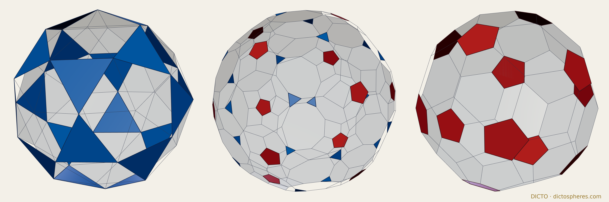
| stage (seed) | 2-faces | on the 60 mirrors, on each | on no mirror |
|---|---|---|---|
| 600-cell (0, 0, 0, 1) | 1200 triangles | 20 triangles | none |
| truncated 600-cell (0, 0, 1, 1) | 2400 triangles, 1200 hexagons | 20 hexagons | the 2400 triangles |
| bitruncated 600-cell (0, 1, 1, 0) | 1200 triangles, 720 pentagons, 2400 hexagons | 20 triangles and 12 pentagons | the 2400 hexagons |
| truncated 120-cell (1, 1, 0, 0) | 2400 triangles, 720 decagons | 12 decagons | the 2400 triangles |
| 120-cell (1, 0, 0, 0) | 720 pentagons | 12 pentagons | none |
Each row follows from Theorem 10.1 (for the truncated 600-cell, the unringed nodes 1 and 2 give the roots of the pentagon group, and α1 is orthogonal to the hexagons' nodes 3, 4 but no root of nodes 1, 2 is orthogonal to the triangles' nodes 2, 3) and was measured face by face (vacuus_queens.py: every face's central hyperplane, grouped and classed under all 14 400 symmetries). The faces on no mirror are scattered: computed, they lie two on each of 1200 central slices. At the bitruncated 600-cell the hexagons on no mirror are the faces where a truncated tetrahedron meets a truncated icosahedron: the faces of the exchanges in #104's scutoid tissue. The faces between like cells stand on the mirrors; the faces of exchange stand off them.
| chain | middle (0, 1, 1, 0) | on the mirrors | on no mirror (middle bond) |
|---|---|---|---|
| A4 3–3–3, 10 mirrors | bitruncated 5-cell: 30 corners, 10 truncated tetrahedra | 20 triangles | 20 hexagons |
| B4 4–3–3, 16 mirrors | bitruncated tesseract: 96 corners, 8 truncated octahedra, 16 truncated tetrahedra | 32 triangles (between truncated tetrahedra), 24 squares (between truncated octahedra) | 64 hexagons, between the two kinds |
| F4 3–4–3, 24 mirrors | bitruncated 24-cell: 288 corners, 48 truncated cubes | 192 triangles | 144 octagons |
| H4 5–3–3, 60 mirrors | bitruncated 600-cell: 3600 corners, 120 truncated icosahedra, 600 truncated tetrahedra | 1200 triangles, 720 pentagons | 2400 hexagons, between the two kinds |
Each middle was built from its seed and its faces measured (vacuus_middles.py; the H4 row repeats Section 10.3 as a control). In the self-reading chains A4 and F4 every cell is alike, yet the middle-bond faces still leave the mirrors: the law belongs to the bond, not to the cells.
Proof. Node 1 is the only unringed node; α1 is orthogonal to α3 (nodes 1 and 3 are not joined) but not to α2. ∎ This is the split seen in the 3D Vacuus of the DICTO 1:2 Truncated Octahedron (Figure 11.1; #105, Figure 4) and measured on the Icosaxes and the Unborn Axes: three discs of four edges, the other edges each on a central plane of its own with one partner.
The Mirror Law accounts for every Vacuus slice that is a mirror. Chapter 6 met the other kind: the 4D permutohedron's seed rings every node, so none of its faces lies on a mirror, yet five slices through its heart carry six faces each. Across all the reflection-group polytopes such slices off the mirrors occur only in the quasi-regular cuboctahedron and icosidodecahedron and, in four dimensions, in the permutohedron and the runcinated 5-cell (#108, Observation 4). In three dimensions the Mirror Law also reads DICTO's Dogstar: 114 of its 138 edges lie on 15 central discs, the 15 mirrors of the icosahedral group.
DICTO: #107 The Vacuus of the Queens (Sections 1–5, Figure 1); #108 The Atlas of the Chains (Observation 4); #63, #65, #76 (the Queens); #87 (the Vacuus); #42 (Dogstar); #104; #105. H. S. M. Coxeter, Regular Polytopes, 3rd ed., Dover (1973); J. E. Humphreys, Reflection Groups and Coxeter Groups, Cambridge University Press (1990); B. Champagne, M. Kjiri, J. Patera and R. T. Sharp, Description of reflection-generated polytopes using decorated Coxeter diagrams, Can. J. Phys. 73 (1995) 566–584.
The Vacuus and the sweep counted for every number of values, the golden slice of the 4D filling, and change ringing on the permutohedra of three to eight values.
The permutohedron of n values in every dimension: its central slices counted, and its sweep counted by the Eulerian numbers
Re-edited from #105 (DICTO DOI: 10.5281/zenodo.24121177), Section 4, and #104 (DICTO DOI: 10.5281/zenodo.24111864), Theorem 1′. Proposition 11.2 for every n is new in this book.
The permutohedron of five values carried this book's two four-dimensional stories, its Vacuus and its sweep. Both continue in every dimension.
The construction works for the permutohedron of 1, …, n in dimension n − 1: its ridges (faces one dimension below the cells) are the ordered splits into three blocks, and each spans one central slice with the centre.
| n (dimension) | 3 (2) | 4 (3) | 5 (4) | 6 (5) | 7 (6) | 8 (7) | 9 (8) |
|---|---|---|---|---|---|---|---|
| ridges | 6 | 36 | 150 | 540 | 1806 | 5796 | 18150 |
| Vacuus slices N(n) | 3 | 15 | 65 | 225 | 770 | 2443 | 7761 |
Proof. By the normal formula, a split with a ≠ c gives a slice whose normal takes three different values; the normal is unique up to scale, its level sets are the blocks, its one negative level is B₂, and the two positive levels are B₁ and B₃ in either order, so only the split and its reverse give the slice, and no two-valued slice can equal it: the first sum. A split with a = c gives a normal with two values, c₁ on S = B₁ ∪ B₃ (of even size 2a) and c₂ on the middle block T; the ratio c₁ : c₂ = −b : 2a depends only on the sizes of S and T, so the slice is fixed by the unordered pair {S, T}, and every pair with |S| even and at least 2 occurs. When n is odd exactly one of S, T has even size: 2n−1 − 1 pairs. When n is even, |S| = 2a is even so |T| is even too, and the split (a, b, a) gives the same slice as (b/2, 2a, b/2) with S and T exchanged: the pairs with both parts even, (2n−1 − 2)/2 = 2n−2 − 1. The two-valued slices are the hyperplanes Σi∈S xi = 0 through the centre (centred coordinates), parallel to facets: members of the resonance (all-subsets) arrangement (Kamiya, Takemura and Terao 2011; Billera et al. 2012; Kühne 2023). The three-valued slices are not of that kind. In closed form, with cn the central trinomial coefficient (1, 1, 3, 7, 19, 51, …; OEIS A002426), the splits with a = c number An = cn − 1 − [n even]·C(n, n/2), and N(n) = (3n − 3·2n + 3 − An)/2 + T(n). Brute force over every ridge for n = 3, …, 9, with each slice found by exact elimination, gives the same numbers (vacuus_general.py). ∎
In two dimensions the Vacuus of the hexagon is its three long diagonals; in three, the 3D permutohedron's 36 edges lie on 15 planes through its centre. So do the 36 edges of the DICTO 1:2 Truncated Octahedron: its 15 cards are three octagons in the three coordinate planes, slotted at right angles like the three squares of the octahedron Vacuus, each carrying 4 edges, and twelve hexagons carrying 2 each (Figure 11.1; vacuus3d_12.py, exact). Neither N(n) nor its three-valued part (0, 12, 50, 210, 707, 2380, 7506) is in the On-Line Encyclopedia of Integer Sequences (searched 11 November 2026 for 3, 15, 65, 225, 770, 2443 and for 12, 50, 210, 707, 2380); we make no stronger claim of novelty.

Proof. As for Proposition 5.1: exchanging k (at position p) and k + 1 (at q) changes f by up − uq, negative exactly when p < q; the orderings counted by how many k precede k + 1 are counted by the Eulerian numbers (Petersen 2015). Listed directly for n = 3 to 7 (sweep_all_n.py). ∎
DICTO: #105 DICTO 1:2 Truncated Octahedron: The 4D Vacuus of the Permutohedron (Section 4, Theorem 3, Figure 4); #104 Scutoid Tissues in Four Dimensions (Theorem 1′); Chapters 5 and 6. T. K. Petersen, Eulerian Numbers, Birkhäuser (2015), doi:10.1007/978-1-4939-3091-3.
Cutting the 4D permutohedron filling in the golden direction gives a non-repeating filling of space by cells of exactly 35 kinds, in endlessly many shapes
New in this book. It answers the second lead of #105 (DICTO DOI: 10.5281/zenodo.24121177).
Chapter 11 followed the permutohedron into every dimension. This chapter cuts its four-dimensional filling. The 4D permutohedra fill four-dimensional space, every one a translate of the same cell. Cut that filling by a three-dimensional slice and the cells it crosses fill the slice. In a rational direction the cut repeats; #105 left the golden direction u = (1, φ, φ², φ³, φ⁴) as its second lead.
Proof. A cell's section is P ∩ {u · x = c − u · λ}, λ in the lattice; since u · λ runs over a set containing integers and integer multiples of φ, the offsets are dense, which gives (i). The combinatorial type of a section is the set of faces of P that straddle the level, with their containments; it is constant between consecutive corner heights. The heights u · σ over the 120 orderings σ of −2, …, 2 were computed exactly in ℤ[φ] (φi = Fi−1 + Fiφ): 70 distinct values, 69 open bands; their straddling-face graphs fall into 35 isomorphism classes, and density puts cells in every band. ∎ (golden_types.py)
| direction | distinct corner heights | bands | combinatorial types |
|---|---|---|---|
| rational (1, −1, 0, 0, 0) | 8 | 7 | 3 possible; at one offset a single one, the repeating one-piece filling |
| generic | 120 | 119 | 60 (bands pair up under the central symmetry) |
| golden (1, φ, φ², φ³, φ⁴) | 70 (50 ties) | 69 | 35 |
The golden direction sits between the two: not repeating, as a rational cut does, but with far fewer kinds than a generic cut, because the golden ratio makes corners meet at the same height. This is the permutohedron's own version of the passage from crystal to quasicrystal: a finite set of kinds, never repeating.
DICTO: #105 (lead 2; the permutohedron filling); the slice test of 10 November 2026. J. H. Conway and N. J. A. Sloane, Sphere Packings, Lattices and Groups, 3rd ed., Springer (1999) (the lattice A4* and its Voronoi cell); M.-C. Brandenburg, J. A. De Loera and C. Meroni, The best ways to slice a polytope, Math. Comp. 94 (2025) 1003–1042, doi:10.1090/mcom/4006.
English change ringing walks the permutohedron; every extent is a tour of its corners, and the three principles of Kyushindo, Change 万物流転, Rhythm 律動 and Harmony 調和, can be read off the tours exactly
New in this book. It reads the three principles of Kyushindo, as #43 (DICTO DOI: 10.5281/zenodo.23532013) gives them, in English change ringing.
Part Three ends with the oldest walk through all the orders of a set. In English change ringing a band rings a set of tower bells round and round, each bell once in every row. Between one row and the next the bells may only change places with a neighbour, because a heavy bell swinging full circle can be held back or hurried by one place but no more. A complete piece that rings every possible order of the bells once, and comes back to the start, is called an extent. Write each order as a point, as this book does: the 24 orders of four bells are the 24 corners of the truncated octahedron. Then every change is a step from a corner to a neighbouring corner, and an extent is a tour that visits every corner once and comes home. This chapter makes that picture exact, counts every tour of four bells, finds the ringers' standard methods among them, and reads the three principles of Kyushindo in them: the change is the step, the rhythm is the pattern of steps, and the harmony is the symmetry of the tour and the shortest way across.
Kyushindo is the martial art of Kenshiro Abbe. DICTO gives its three principles as Change 万物流転, Rhythm 律動 and Harmony 調和; #43 (DICTO Kyushindo Cores) read them in shells of towers, with rhythm as Fibonacci beats and harmony as exact golden fits. Here they are read in the permutohedron. The reading is an interpretation; every statement of fact below is exact and checked.
A row is an order of the bells 1, …, n (1 the lightest); rounds is 12…n and backrounds n…21. A change exchanges the bells in one or more disjoint pairs of neighbouring places. Ringers write a change by the places in which bells stay put (its place notation): on four bells, 12 swaps the bells in places 3 and 4, 14 swaps places 2 and 3, 34 swaps places 1 and 2, and x (a cross) swaps both outer pairs at once. As in Chapter 1, the row r is the point x(r) in which coordinate b is the place of bell b; the rows of n bells are the corners of the permutohedron of 1, …, n.
Each swap moves two coordinates by one each, and the swaps of one change are independent, so they can be made one at a time in any order. Proof. The faces of the permutohedron correspond to ordered partitions of the places into blocks of consecutive places: the face is the set of rows that agree with r outside the blocks and only permute bells within each block (G. M. Ziegler, Lectures on Polytopes, Example 0.10). The face of a change with swaps at k disjoint pairs is the one whose blocks are those k pairs and single places otherwise: it is a product of k segments, a k-cube, with 2k corners (the rows given by any subset of the swaps), and the change joins the corner r to the corner where all k swaps are made, which is opposite; the squared distance is 2k. A hexagon is a block of three consecutive places, and taking a row to the opposite corner of a hexagon reverses three bells, which no set of disjoint neighbouring swaps does. ∎ (Checked for every row and every change on 4, 5 and 6 bells.)
A change is a choice of neighbouring pairs that do not overlap. Proof. There are n − 1 neighbouring pairs in a line, and a change is a nonempty set of them with no two sharing a place. Sets of non-overlapping pairs among m pairs in a line number Fm+2 (the last pair is either unused, leaving m − 1 pairs, or used, leaving m − 2): with m = n − 1 that is Fn+1, less the empty set. ∎ (Checked for n = 2, …, 12.) The count is elementary and we claim no priority for it; we note only that the Fibonacci numbers of #43's beats appear again here, as the number of strokes open to a band at every row.
So the graph that ringing moves on is more than the permutohedron's edges. Call it the change graph Rn: its corners are the n! rows and its links are all the changes. It contains the edge graph Pn of the permutohedron (the one-swap changes) and adds the diagonals of the cube faces. On four bells, R4 is the truncated octahedron with both diagonals of each of its 6 square faces drawn in: 36 edges and 12 diagonals, four links at every corner. The two kinds of 2-face of the permutohedron are the two kinds of relation between swaps: a square is two swaps far apart, which can be made in either order (sisj = sjsi); a hexagon is two swaps that share a bell, where the two ways round, three swaps each, agree (sisi+1si = si+1sisi+1, the braid relation). Ringing takes the square in one stroke, as a cross change; it can never take a hexagon in one stroke.
| bells | rows (corners) | edges | squares | hexagons | changes at each row | links of Rn |
|---|---|---|---|---|---|---|
| 3 | 6 | 6 | 0 | 1 | 2 | 6 (the hexagon) |
| 4 | 24 | 36 | 6 | 8 | 4 | 48 |
| 5 | 120 | 240 | 90 | 60 | 7 | 420 |
| 6 | 720 | 1800 | 1080 | 480 | 12 | 4320 |
Table 13.1. The permutohedra of 3 to 6 values and their change graphs (counts checked by enumeration).
An extent rings every row once and returns to rounds; read as a closed path, it is a Hamiltonian cycle of Rn, and every Hamiltonian cycle passes through rounds, so the extents of n bells (as cycles of rows, either way round) are exactly the Hamiltonian cycles of Rn. On four bells all of them can be listed.
Since there are only 24 corners, every closed tour can be found by trying every path from rounds. Proof. Exhaustive enumeration of the Hamiltonian cycles through rounds by two independent programs (a depth-first search in C and one in Python) that agree; each was first run on graphs whose counts are known (hexagon 1, K4 3, cube 6, dodecahedron 30, Petersen graph 0). Classes by a canonical form under the 48 symmetries; the automorphism groups by backtracking. (iv): a tour of R4 has 24 steps, an even permutation overall, and each one-swap change is odd and each cross even, so the one-swap changes are even in number, and with them the crosses. ∎ (ring.py, hamcount.c)
This corrects a common picture: that an extent is a Hamiltonian cycle on the permutohedron. It is so only when the extent uses no cross change. On four bells that is 44 tours out of 5396; the other 5352 cut across square faces. Plain Bob Minimus is one of these.
The tour is fixed by the method, so these facts are read off it. Proof. The plain course is 24 distinct rows returning to rounds; every other change is the cross x, whose links form a perfect matching of R4's 24 corners, the 12 diagonals; the symmetry group is the stabiliser of the tour among the 48 symmetries, computed element by element (3 rotations of orders 1, 3, 3 and 3 improper elements of order 2, none the central inversion). ∎ (ring.py)
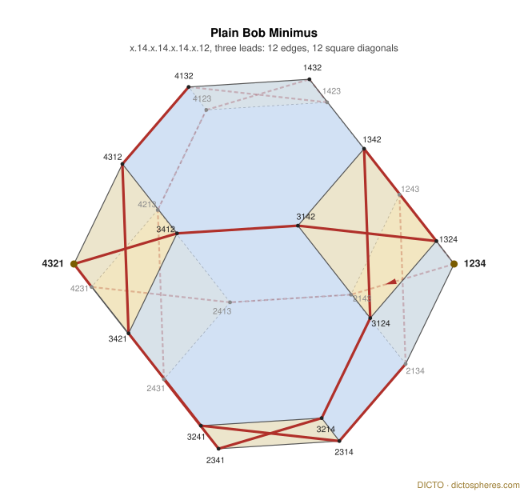
The rhythm of an extent is its sequence of changes, a word read round a circle. Ringers build most extents from a lead, a short word repeated with the bells renamed each time; such a word repeats exactly. Many tours have no repeat at all.
The words were read off the 5396 listed tours. Proof. Period by direct comparison of each cyclic word with its shifts. If the word has period p, rows t and t + p differ by one and the same renaming L (since changes act on places and renamings act on bells, and the two commute), so L maps the tour to itself, shifted by p. The collection (Central Council of Church Bell Ringers, XML of 10 November 2026; 1491 four-bell entries, of which 76 contain a change in which no pair swaps, so repeat a row and are left out) was parsed and every method's lead head checked against the collection's own; the plain courses that are extents were matched to the 162 classes by canonical form. ∎ (extract_cccbr.py, ring.py)
The four classes of tours that keep to the edges of the truncated octahedron are rung as Double Court Place, Double Canterbury Place, Lyndon (and Baines Johnson) and Landbeach Treble Place Minimus. Across the stages the collection gives: 2 of 85 three-bell methods (both along edges: the hexagon), 139 of 1415 four-bell, 184 of 1226 five-bell (2 along edges: Crambo Doubles and Historic Imber Treble Place Doubles) and 1 of 6331 six-bell methods (I Can't Believe It's Not Plain Bob Treble Place Minor) whose plain course is already an extent. Every other method needs calls.
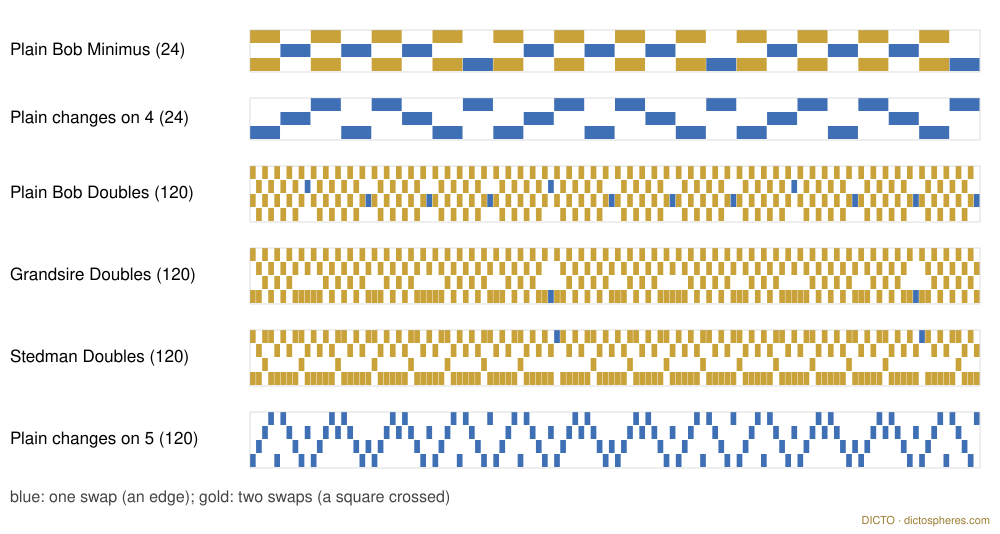
Each class was tested against all 48 symmetries. Proof. In the class listing of Theorem 13.3 the symmetry order of a class is 48 divided by its size; the largest is 12 (three classes of 4 tours each), with 2, 4, 11, 67 and 75 classes of orders 8, 6, 4, 2 and 1 below. The elements of each group of order 12 were classified (proper of orders 1, 2, 3; improper of orders 2 and 6, among them the central inversion): that is D3d. The names come from the matching of Theorem 13.5; the plain changes were generated directly and matched in the same way. ∎ (ring.py)
Ringers call these three methods "double", and the Central Council classes the symmetry of each as palindromic, double and rotational. On the solid, each has the central inversion among its symmetries: the most symmetric tours of the truncated octahedron are exactly these three double methods.
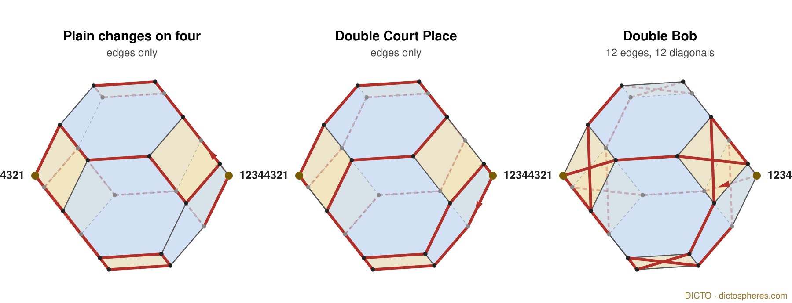
The second harmony is the shortest way between rounds and backrounds, the two orders farthest apart.
Every bell must travel to the opposite end; plain hunt moves every bell one place at every change, and that cannot be beaten. Proof. Along edges: each step undoes one inverted pair and backrounds has all C(n, 2) pairs inverted; the shortest paths are the reduced words of the longest permutation, counted by Stanley (1984) as C(n,2)! / ∏ (2i − 1)n−i, and reproduced here by counting shortest paths for n ≤ 6. With changes, at most n: in plain hunt each bell moves one place at each change, turning at the ends, and after n changes it stands where it began counted from the other end: a bell that starts upward from place b reaches place n after n − b changes, keeps it once and comes down b − 1 places, and a bell that starts downward reaches place 1 after b − 1 changes, keeps it once and climbs n − b places, so either way it ends at place n + 1 − b (this is the ringers' halfway point of the plain hunt). At least n, for n ≥ 3: suppose n − 1 changes suffice. Bell 1 must climb n − 1 places, so it rises at every change; at the first change it changes places with bell 2, which drops to the front and then has n − 2 changes to climb n − 2 places to place n − 1, so it too rises at every change, including the second; but at the second change the place above bell 2 is held by bell 1, which must also rise, a contradiction. Both halves of the plain hunt circle are therefore shortest. Only these two. Take a way of L changes from rounds to backrounds. Let rb be the number of changes at which bell b keeps its place, S the number of swaps, and u the number of swaps that put a pair back in order (swap two bells that are already inverted). A change that swaps k pairs keeps n − 2k places, so 2S = nL − Σ rb; every swap changes the number of inverted pairs by one, and backrounds has all C(n, 2) pairs inverted, so S = C(n, 2) + 2u. Together, Σb rb + 4u = n(L − n + 1). Now let L = n. Bell b moves n − rb times by one place and ends |n + 1 − 2b| places from where it began, so n − rb has the parity of n + 1 and rb is odd, at least 1. The identity, Σ rb + 4u = n, then forces rb = 1 for every bell and u = 0. With u = 0 two consecutive changes swap no common pair, since the same two bells would swap back. Let Ft be the set of places kept at change t; Σt |Ft| = n, and |Ft| has the parity of n. If n is odd, every |Ft| is odd and so exactly 1: change t keeps one place pt and swaps every pair on both sides of it. If pt < pt+1, both changes swap the pairs left of pt and the pairs right of pt+1; as they share none, pt = 1 and pt+1 = n. In the same way pt > pt+1 forces pt = n and pt+1 = 1, and pt = pt+1 is impossible. So the kept places alternate 1, n, 1, … or n, 1, n, …. If n is even, the changes with |Ft| = 0 are x, and no two of them are consecutive, so there are at most n/2; each remaining change keeps at least two places, and the sum n forces exactly n/2 changes x and exactly two kept places at each of the rest. Placing n/2 non-consecutive x among n changes leaves only one change to spare, so no run of the other changes is longer than two, and none at either end is longer than one: each of them stands next to an x. It shares no pair with that x, so it swaps (n − 2)/2 pairs among 23, 45, …, (n − 2)(n − 1), that is, all of them: it is 1n. Two changes 1n cannot be consecutive, since they share the pair 23, so x and 1n alternate. In both cases the way is one of the two halves of the plain hunt. ∎ Breadth-first search confirms the distance, the two shortest ways and the farthest rows for n = 3, …, 8 (5040 rows for n = 7, 40 320 for n = 8), with the identity checked on every shortest way (ring.py, geodesics.py).
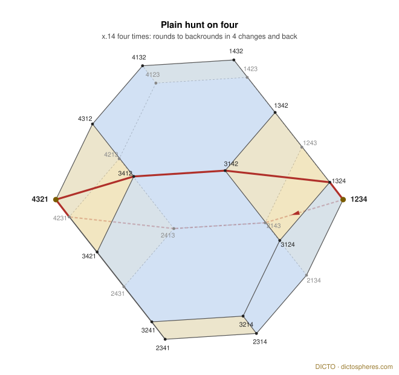
On five bells the rows are the 120 corners of the four-dimensional permutohedron of Chapter 6, and on six the 720 corners of its five-dimensional sister. Most methods ring only part of the rows in a plain course; the conductor's calls (bobs and singles), which alter one change at chosen lead ends, make up the extent. The searches below try every calling.
A lead is a fixed block of changes; a calling picks one of a few blocks at each lead end, and the search tries every choice, stopping a branch as soon as a row repeats. Proof. Depth-first search over callings of 12 leads (10 for Stedman, with the single possible at each of the 20 six ends), exhaustive and finished well within its time cap; each extent rechecked row by row. The leads were expanded from the collection's notation and agree with its lead heads; the calls are the standard ones (sources below), and Wenham's Grandsire extent P B P B P S, P B P B P S is found among the ten. ∎ (ring.py)
| extent | rows | changes: edges + square diagonals (+ cube diagonals) | word: period (parts) | symmetry order | backrounds at row |
|---|---|---|---|---|---|
| plain changes on four | 24 | 24 + 0 | 8 (3) | 12 (D3d) | 13 (halfway) |
| Plain Bob Minimus | 24 | 12 + 12 | 8 (3) | 6 (C3v) | 5 |
| Double Bob Minimus | 24 | 12 + 12 | 8 (3) | 12 (D3d) | 13 (halfway) |
| Double Court Place Minimus | 24 | 24 + 0 | 8 (3) | 12 (D3d) | 13 (halfway) |
| Plain Bob Doubles, B P P P three times | 120 | 12 + 108 | 40 (3) | 6 | 6 |
| Grandsire Doubles, B P B P S P twice | 120 | 2 + 118 | 60 (2) | 2 | 116 |
| Stedman Doubles, singles at leads 5 and 10 | 120 | 2 + 118 | 60 (2) | 2 | 12 |
| plain changes on five | 120 | 120 + 0 | 40 (3) | 6 | 65 |
| plain changes on six | 720 | 720 + 0 | 240 (3) | not computed | 390 |
| Plain Bob Minor, the calling found (bobs and singles) | 720 | 10 + 350 (+ 360) | 720 (1, no repeat) | not computed | 7 |
Table 13.2. The extents of this chapter (rows counted from rounds as row 1). Symmetry is the stabiliser of the tour among the 2·n! symmetries of the permutohedron of n values (renamings of the bells, with or without reading rows backwards). The Grandsire calling is Wenham's P B P B P S begun one lead later; the Stedman calling has a single at the first six end of the 5th and the 10th lead. The Plain Bob Minor calling, at the 60 lead ends: PPPPBPPPPBPPPPSPPPPBPPPPBPPPBPPPPBPPSPPPSSPPPPSPPSPPPPSSSPBS.
Every second change of Plain Bob Minor is a cross, and the crosses pair the 720 rows off. Proof. (i) Exhaustive search over bob-or-plain at each of 60 lead ends (58 379 branches, finished, none comes round true at 720); with singles the first extent found is that of Table 13.2. We have not found this statement in the sources we checked. (ii) Lemma 13.1 for k = 3; the x-links form a perfect matching of the 720 rows (360 links); a cube face of type (2, 2, 2) is an ordered choice of three pairs of bells, 6!/23 = 90 of them, each with 4 long diagonals. (iii) Generated and checked: 24, 120 and 720 rows, all distinct, each step one swap, the last step back to rounds one swap. ∎ (ring.py)
A band ringing an extent walks once round every corner of a permutohedron and comes home. Each stroke is a step to a neighbouring corner or straight across a square or cube face, never across a hexagon; the number of strokes open at every row is a Fibonacci number less one. On four bells there are exactly 5396 such walks (44 of them along the edges alone), in 162 kinds; the ringers' named methods already cover 43 kinds, including every walk with a repeating rhythm and every walk that keeps to the edges. The most symmetric walks, with rounds and backrounds opposite each other, are exactly the three "double" methods, one of them in the class of the old plain changes; and the shortest way from rounds to backrounds is the plain hunt, n strokes each way round its circle. Change, rhythm and harmony are, in this reading, the step, the repeat and the symmetry of the walk.
Claimed here: Lemma 13.1 as stated for ringing (the face correspondence itself is classical); Theorem 13.3 (the counts 44 and 5396, the classes, the automorphism group of R4, the cross counts); Proposition 13.4; Theorem 13.5 (rhythm classes and the census of the collection against them); Theorem 13.6; the ringing half of Theorem 13.7 (distance n and the two shortest ways for every n ≥ 3, with proofs; the farthest rows for n ≤ 8); Theorem 13.8 (the complete lists of extent callings with the standard calls); Proposition 13.9. Known and used: the faces of the permutohedron (Ziegler); the Fibonacci count of Lemma 13.2 (elementary); Stanley's count of reduced words (reproduced); the Steinhaus–Johnson–Trotter order as a Hamiltonian cycle of the permutohedron (reproduced for n = 4, 5, 6); the method notations, lead heads and calls of the Central Council and of the ringing sources below.
Popular claims checked. "An extent is a Hamiltonian cycle on the permutohedron": true only for extents without cross changes (44 of 5396 on four bells); in general it is a Hamiltonian cycle of the change graph Rn (Theorem 13.3). "The plain changes give a Hamiltonian cycle of the permutohedron" (Wikipedia, Steinhaus–Johnson–Trotter algorithm): confirmed for 4, 5 and 6 bells. "To ring the extent of Grandsire Doubles we need singles as well as bobs" (Wenham): confirmed, all 10 extent callings use both. Plain Bob Minimus has a plain course of 24 rows and lead head 1342 (Central Council): confirmed. "An extent is n! rows" (Wikipedia, Change ringing): the definition used here.
DICTO: #43 DICTO Kyushindo Cores (the three principles, the Fibonacci beats); Chapter 1 (the permutohedron of three values), Chapter 2 (orderings of four), Chapter 6 (the 120 orders of five) of this book. Kyūshindō and Kenshiro Abbe: Wikipedia, as cited in #43.
Ringing data and calls. Central Council of Church Bell Ringers, Methods Library, https://methods.cccbr.org.uk/ : the Central Council Collection of Methods, XML (all classes, collection date 10 November 2026) and the text lists of Plain, Principle and Treble Place Minimus, Plain and Principle Doubles and Plain Minor (downloaded 12 November 2026); Composition Library page of Plain Bob Minimus (complib.org/method/10460: plain course 24, lead head 1342). P. D. Wenham, Bell Ringing by Instalments 05, Grandsire and Stedman (2021), www.pdg.org.uk (Grandsire Doubles single as 3.123 rows, the extent P B P B P S repeated, Stedman Doubles single). Ringing-theory mailing list, "Calls in Doubles", August 2010, lists.ringingworld.co.uk (Plain Bob Doubles: 145 bob, 123 single, 125 lead end).
Mathematics. R. P. Stanley, On the number of reduced decompositions of elements of Coxeter groups, European J. Combin. 5 (1984) 359–372, doi:10.1016/S0195-6698(84)80039-6. G. M. Ziegler, Lectures on Polytopes, Springer (1995), doi:10.1007/978-1-4613-8431-1. Wikipedia, Steinhaus–Johnson–Trotter algorithm and Change ringing (read 12 November 2026).
Change ringing and group theory, checked by bibliographic record only (each record checked on Crossref on 12 November 2026; the texts were not available to us, and no statement of this chapter rests on them): T. J. Fletcher, Campanological groups, Amer. Math. Monthly 63 (1956) 619–626, doi:10.1080/00029890.1956.11988879; R. A. Rankin, A campanological problem in group theory, Proc. Cambridge Philos. Soc. 44 (1948) 17–25, doi:10.1017/S030500410002394X, and II, 62 (1966) 11–18, doi:10.1017/S0305004100039451; A. T. White, Ringing the changes, Math. Proc. Cambridge Philos. Soc. 94 (1983) 203–215, doi:10.1017/S0305004100061053; A. T. White, Fabian Stedman: the first group theorist?, Amer. Math. Monthly 103 (1996) 771–778, doi:10.1080/00029890.1996.12004816; B. Polster, The Mathematics of Juggling, Springer (2003), chapter 6, "Jingling, or ringing the changes", 141–176, doi:10.1007/0-387-22748-2_6; F. J. Budden, The Fascination of Groups, Cambridge University Press (1972) (record of its review in the Mathematical Gazette, doi:10.1017/S0025557200132978).
The reference library was searched for campanology, change ringing, bell ringing, Stedman, permutohedron and plain changes: no change-ringing source; two permutohedron entries (Koca et al. on the Voronoi cell of A4*, and a paper on deformation cones of the braid arrangement), neither on ringing.
From the rhombic dodecahedron taken apart in Rhombiverse, through the bonds and the golden cuts, to the heart of the 4D permutohedron
Re-edited from #105 (DICTO DOI: 10.5281/zenodo.24121177), Section 6, with a closing paragraph on what the book added.
The DICTO 1:2 Truncated Octahedron grew from two lines of DICTO's work. The first began in Polyhedraverse, where rhombic dodecahedra cut in half and rejoined gave a slightly irregular truncated octahedron that still filled space (#58). #48 then placed truncated octahedra in a family T(x), each filling space with its partner T(1/x), from Kelvin's cell at x = 1 to the golden pair, the Icosaxes and the Unborn Axes, at x = τ; the DICTO 1:2 is its member x = 1/2. #52 read the family as one weight sliding between the two kinds of site of the caesium-chloride network, and #93 proved that each pair on the walk fills space in that one way only. The hexagons of the DICTO 1:2 are truncated triangles, the face that #88 found running through the golden cuts: there their sides are in the ratio φ, here in the ratio 2; and #88 and #89 found the golden pairs as slices of four-dimensional solids. The second line is the Vacuus: #44 cut the Platonic solids from their centres into Aristotle's pyramids, and #87 kept only the walls between those pyramids, one fin on every edge, so that the octahedron's Vacuus is three squares through its centre and the cuboctahedron's four hexagons. #105 joined the two: one dimension up, the walls become three-dimensional central slices of the 4D permutohedron, and the five at its heart are DICTO 1:2 Truncated Octahedra, the stop x = 1/2 of the slider of #48.
What the book added. Read back through the permutohedron, the path has one thread: an exchange of neighbours. It is the edge of the truncated triangle (Chapter 1), the slider of the golden loop (Chapters 2–3), the move a scutoid makes in a slice (Chapter 5), counted by the Eulerian numbers in every dimension (Chapters 7 and 11) and balanced in every simple tissue (Chapter 7); where the exchanges crowd into a single corner they become rosettes (Chapter 8). The heart of the 4D Vacuus turned out to be the permutohedron's own, not its group's (Chapters 6 and 10). What DICTO saw in the rhombic dodecahedron taken apart, an echo of the permutohedron in its squares, holds in the squares and stops at the hexagons (Chapter 4).
DICTO: #105 (Section 6); the chapters of this book; the papers named in the path.
The book set out to show that one classical solid, the permutohedron, reorganises a large part of DICTO's geometry, and it has. In three dimensions the truncated triangle is the permutohedron of three values and every face of every permutohedron is a truncated triangle or a rectangle (Chapter 1); the golden loop of DICTONIC is exactly the set of four-value permutohedra with the cube's full symmetry, each filling space with its reciprocal in one way only (Chapter 2); and the weight that drives the web of bonds is the spacing of the four values, d = (g − m)/(g + m) (Chapter 3). The paradigm also showed where it stops: DICTO's rhombic dodecahedron taken apart closes into the chamfered cube, whose hexagons are elongated, not truncated triangles, so it is not a permutohedron, yet with cube pyramids it fills space (Chapter 4). Scutoids turned out to be exchanges of neighbours seen in a slice (Chapter 5).
In four dimensions the permutohedron of five values carries two stories. Its Vacuus has 65 central slices of four kinds, and at its heart five DICTO 1:2 Truncated Octahedra slot together along ten regular hexagons (Chapter 6); its sweep is a scutoid tissue counted by the Eulerian numbers, and every simple 4-polytope sweeps the same way, by its h-vector, with the exchanges balanced between the Queens (Chapter 7). The Coxeter chain tells clean tissues from rosettes (Chapter 8) and faces on mirrors from faces off them (Chapter 10), and the walls of the Swap Rule of close packing are exchanges one dimension up (Chapter 9). Part Three carried both stories into every dimension (Chapter 11), cut the 4D filling in the golden direction into a non-repeating filling of 35 kinds of cell (Chapter 12), and found the permutohedron in the oldest walk through all the orders of a set, English change ringing, where the plain hunt is the only shortest way from rounds to backrounds for every number of bells (Chapter 13).
Proved: proof in the chapter or in the paper named. Exact: computed in exact arithmetic (study and commit in the appendix Checks and data). Computer-assisted: an exact proof whose cases were decided by a program. Numerical: floating point only. Open: not proved.
| ch. | claim | status |
|---|---|---|
| 1 | Lemma 1.1: the six orders of a < b < c span a truncated triangle with sides √2(b − a), √2(c − b), and every truncated triangle arises so; Corollary 1.2: every 2-face of a permutohedron is a truncated triangle or a rectangle | proved (and checked exactly) |
| 2 | Proposition 2.1: 48 symmetries exactly for values symmetric about their mean; Theorem 2.2: T(x) and T(1/x) fill space, in one way only | proved (2.2 in #48, #105, #93) |
| 3 | Theorem 3.1: the power-diagram cell at weight d is the permutohedron with gaps g, m, g, d = (g − m)/(g + m) | proved (with #90, #105); checked exactly |
| 4 | Theorem 4.1: the chamfered cube Z, volume 15, and DICTO's build of 14 Hemi RDs as Z less six cube pyramids | Z exact; the build matched numerically (exact reading open) |
| 4 | Corollary 4.2: Z is not a permutohedron; Theorem 4.3: Z and unit cubes fill space | proved; 4.3 exact |
| 5 | Proposition 5.1: the exchanges of the 4D sweep at the 66 orderings with two ascents | proved |
| 5 | Theorem 5.2: the flat-faced scutoid shell of the truncated icosahedron | proved (flatness argument), checked numerically |
| 5 | Theorems 5.3 and 5.4: the polar flip and the cycle of four shells | numerical (faces flat to 10−13); exact proofs to write |
| 5 | Proposition 5.5: layer spacing h of the crystal of truncated icosahedra, algebraic of degree 8 | exact (closed form in ℚ(2 cos 6°)) |
| 6 | Theorem 6.1: 65 central slices of four kinds; Theorem 6.2: the heart, five permutohedra of 1, 2, 4, 5 along ten regular hexagons | proved (#105), exact |
| 7 | Theorems 7.1, 7.1′: sweeps of simple polytopes counted by the h-vector; Theorem 7.2, Lemma 7.3; Theorem 7.4: the balance law | proved (#104); 7.3 and 7.4 confirmed by sweeps |
| 8 | Theorem 8.1: edges at a corner read from the chain; the list of clean tissues and rosettes | proved; checked on all 81 Atlas polytopes |
| 8 | Open question 8.2: a balance law for rosette tissues | open |
| 9 | Theorem 9.1: the Swap defect below s = 1/4 for s in [1/8, 1/4], and the Swap Rule from λ = −5s/8 to 3s/8 | computer-assisted exact proof (#104), rerun from a clean checkout |
| 9 | λ below −9s/8; s below 1/8; the Boulder | open |
| 10 | Theorem 10.1 (the Mirror Law) and Corollaries 10.2–10.4 | proved (#107); checked in 228 cases |
| 11 | Theorem 11.1: the Vacuus count N(n); Proposition 11.2: the sweep by Eulerian numbers in every dimension | proved (11.1 in #105); checked n ≤ 9 and n ≤ 7 |
| 12 | Theorem 12.1: the golden slice is non-repeating with exactly 35 combinatorial types; 70 golden corner heights | proved, heights exact in ℤ[φ] |
| 12 | Open question 12.2: a window version with finitely many shapes | open |
| 13 | Lemmas 13.1, 13.2; Theorem 13.3 (44 and 5396 tours); Proposition 13.4; Theorems 13.5, 13.6; Theorem 13.8; Proposition 13.9 | exact (exhaustive, two independent counters) |
| 13 | Theorem 13.7: plain hunt, n changes, the only two shortest ways, for every n ≥ 3 | proved for every n; farthest row checked n ≤ 8 |
(1) Read DICTO's Hemi RD build exactly, in rational coordinates, and prove that it is the chamfered cube less six cube pyramids (Chapter 4). (2) Prove Theorems 5.3 and 5.4 exactly (Chapter 5). (3) Do rosette tissues obey a balance law of their own (Open question 8.2)? (4) Extend the Swap Rule below λ = −9s/8 and below s = 1/8, where a piece reaches two gaps (Chapter 9). (5) Does a window (cut-and-project) construction from the 4D permutohedron filling give a non-repeating filling of space with finitely many shapes (Open question 12.2)? (6) Among the polytopes of the seven reflection chains, Vacuus slices off the mirrors that carry three or more faces occur in four dimensions only in the permutohedron and the runcinated 5-cell (#108, Observation 4); which polytopes outside the chains have them (Chapters 6 and 10)?
The study behind each chapter's checks, in the folder studies/ of the research branch of https://github.com/DICTOR-Master/kaleidohedra (branch research-fig3), with the commit at which it was last changed. FINAL ok marks a script whose log ends with every check passed.
studies/2026-11-11-paradigm-ch1: key_lemma.py (exact, symbolic; the faces of the solids of Section 1.3 computed from their hulls; log kept; FINAL ok), fig_three.py (Figure 1.1). Commit d79c1d1f; checked independently on 11 November 2026, all findings fixed.
studies/2026-11-11-paradigm-ch2: symmetry.py (the full symmetry group of the corners for four symmetric and three non-symmetric spacings; exact; FINAL ok). Commit becdcba3. The identification of T(x): #105, Theorem 4 (dictonic_family.py in studies/2026-11-10-permutohedron).
studies/2026-11-11-paradigm-ch3: weight_map.py (exact, corner by corner, at d = −1/3, 0, 1/τ³, 1/3, 2/7, and every site within ±8 at six weights; FINAL ok), fig_slider.py (Figure 3.1). Commit d79c1d1f; checked independently on 11 November 2026, all findings fixed.
studies/2026-11-11-hemi-rd-build: analyse_build.py (DICTO's world export with exact transforms; float geometry: the hull matched to 10−9, volumes to 10−6, the six pyramids found empty by sampling), fill_test.py (a numerical first test), exact_fill.py (Theorem 4.3 in rational arithmetic: 487 pairs separated by exact planes, densities 15 + 1 = 16; FINAL ok). Commit 52b55686. studies/2026-11-11-paradigm-ch4: fig_ch4.py (Figure 4.1; FINAL ok), commit 7f2c451e.
studies/2026-11-11-paradigm-ch5: swap_orderings.py (all 120 orderings for three directions; exact; FINAL ok), commit bc0c7781. Theorems 5.2–5.4: the draft Scutoids: Layers, Shells and Cycles (commit e932cb55) and its studies of 17 October and 6–10 November 2026 (faces flat to 10−13, volumes adding up). Proposition 5.5: the study of 6–7 November 2026 (layer spacing solved from exact contact planes, corners to 400 digits; h written exactly in ℚ(2 cos 6°), FINAL ok).
studies/2026-11-10-permutohedron (the study of #105; commit 3f41e5b3): the 65 slices and their shapes in exact rational arithmetic, every face confirmed exactly, Euler number 2 for every shape; web_of_bonds.py (the classical facts of Section 6.1 recounted exactly); the six corners of Theorem 6.2 confirmed against all 150 faces. Section 6.4: #107 and #108 (studies/2026-11-11-orbit-polytopes).
The studies named in #104 (sweeps of the 120-cell, the truncated 120-cell and the bitruncated 600-cell in nine generic directions; the 5-cube, the 5D permutohedron and three random simple 4-polytopes, predictions first). Section 7.3: #108.
studies/2026-11-11-paradigm-ch8: simple_rule.py (the edge count of Theorem 8.1 against the measured degree of all 81 polytopes of the Atlas; FINAL ok), commit c5fb794d; the Atlas data of #108 (studies/2026-11-11-orbit-polytopes).
studies/2026-11-09-b1-walls: cells61.py with the five cell logs data/cells2-D24/ (35,561,184 exact sign checks, each ending FINAL ok); rerun from a clean checkout on 11 November 2026 with identical logs, commit 2467d60f. Re-run: cd studies/2026-11-09-b1-walls/scripts && D2=24 python -u cells61.py (about 45 minutes, five cells in parallel).
studies/2026-11-11-orbit-polytopes (commit c5fb794d): mirror_law.py (228 cases, no disagreement), mirror_check.py (Corollary 10.2), vacuus_queens.py (Section 10.3, under all 14 400 symmetries), vacuus_middles.py (Section 10.4).
studies/2026-11-10-permutohedron: vacuus_general.py (Theorem 11.1 by brute force over every ridge, n = 3 to 9, exact elimination), vacuus3d_12.py (the 15 cards of Figure 11.1, exact). studies/2026-11-11-paradigm-ch11: sweep_all_n.py (Proposition 11.2, n = 3 to 7; FINAL ok), commit 2ec0ae43.
studies/2026-11-11-paradigm-ch12: golden_types.py (corner heights exact in ℤ[φ]; types by graph isomorphism; FINAL ok), commit 9ecafe40. The float slice test of 10 November 2026 is superseded.
studies/2026-11-12-change-ringing, commit 52adaaef (Theorem 13.7 proved for every n on 13 November 2026, after an independent reader closed one gap; breadth-first search for n = 7, 8 rerun by the reader with the same result). Study folder studies/2026-11-12-change-ringing: extract_cccbr.py (the collection's stage 3–6 methods to cccbr-methods-stage3-6.tsv), hamcount.c (Hamiltonian cycles), ring.py (every check of this chapter; log ring.log, data ring.json; RING ok), geodesics.py (the shortest ways for n = 3, …, 8 and the identity of the proof of Theorem 13.7; log geodesics.log, GEO ok), figs.py (Figures 13.1–13.4, from the exact rows). Run with Python 3 and a C compiler: gcc -O2 -o scripts/hamcount scripts/hamcount.c && python3 scripts/ring.py . && python3 scripts/figs.py . (about 25 s). Positive controls: Hamiltonian cycles of the hexagon 1, K4 3, cube 6, dodecahedron 30; two independent counters; Stanley's numbers 2, 16, 768, 292 864; the face counts of Table 13.1; all 9057 parsed methods of stages 3–6 give the collection's lead heads; Wenham's Grandsire extent. Negative controls: the Petersen graph (0 cycles); Plain Bob Minimus with lead end 14 (plain hunt, which comes round after 8 rows) and with lead end x (a row repeats), and the Plain Bob Doubles plain course rung to 120 rows: all fail as extents. A first negative control, Plain Bob Minimus with lead end 34, turned out in the pilot to be a true extent and was replaced.
No new checks.
DICTO's papers named in this book, with their DICTO DOIs (concept DOIs: they resolve to the latest version) and where they are named.
| # | title | DICTO DOI | named in |
|---|---|---|---|
| #20 | The FUJI Family | 10.5281/zenodo.23357896 | 1 |
| #42 | The DICTO Sunstar | 10.5281/zenodo.23497702 | 10 |
| #43 | DICTO Kyushindo Cores | 10.5281/zenodo.23532013 | 13 |
| #44 | Aristotle's Pyramid | 10.5281/zenodo.23529497 | Coda |
| #48 | The Golden Split: Icosahedra, Unborns and AXE Become Two Convex Space-Fillers | 10.5281/zenodo.23596362 | 1, 2, 3, Coda, Epilogue, opening |
| #52 | The Web of Bonds: How the DICTONIC Bonds Hand Over | 10.5281/zenodo.23629252 | 3, Coda |
| #53 | The Global Web of Bonds: How Bonds Hand Over Across Crystal Networks | 10.5281/zenodo.23631140 | 2, 3 |
| #58 | From the Octet to Every Stacking: the Web of Bonds | 10.5281/zenodo.23665944 | 4, Coda |
| #61 | The Swap Rule: Ganesha, the Janus Tetrahedra of Squashed Stackings, and the Border at True Close Packing | 10.5281/zenodo.23682596 | 9 |
| #63 | The White Queen 600-cell | 10.5281/zenodo.23690856 | 7, 10 |
| #65 | The Red Queen 120-cell: Aristotle's five pyramids as the cores of the regular four-dimensional solids | 10.5281/zenodo.23716140 | 7, 10 |
| #76 | Between the Queens | 10.5281/zenodo.23780068 | 7, 10 |
| #87 | DICTO Vacuus Solids | 10.5281/zenodo.23896015 | 4, 6, 10, Coda, opening |
| #88 | Every Platonic Solid Has Exactly Two Golden Cuts: the DICTO-Kepler Golden Truncations and the DICTO-GTT-Solids | 10.5281/zenodo.23896439 | 1, Coda |
| #89 | All Five Golden Pairs Are Slices of Four-Dimensional Solids: Golden Cuts beyond Plato | 10.5281/zenodo.23917931 | Coda |
| #90 | Golden on the Octahedron, Silver on the Cube: Six Dimensions and the Golden Cut Cubes | 10.5281/zenodo.23931136 | 2, 3, Epilogue |
| #93 | One Double Pyramid, Two Splits: Cut Across Its Square It Builds Only Cubes, Cut Along a Diagonal It Builds the Rhombic Dodecahedron's Pyramids Freely | 10.5281/zenodo.23933666 | 1, 2, 3, Coda, Epilogue |
| #95 | Pentagons for the Kites: How One Idea for the DICTO Ogdoecontahedron Grew | 10.5281/zenodo.23968270 | 1 |
| #104 | Scutoid Tissues in Four Dimensions | 10.5281/zenodo.24111864 | 5, 6, 7, 8, 9, 10, 11, Epilogue |
| #105 | DICTO 1:2 Truncated Octahedron: The 4D Vacuus of the Permutohedron | 10.5281/zenodo.24121177 | 1, 2, 3, 4, 6, 10, 11, 12, Coda, Epilogue |
| #107 | The Vacuus of the Queens | 10.5281/zenodo.24126800 | 6, 10, Epilogue |
| #108 | The Atlas of the Chains | 10.5281/zenodo.24126802 | 6, 7, 8, 10, Epilogue |
Works by others cited in the chapters, with the chapters that cite them. DICTO's own papers are listed separately, with their DICTO DOIs, in Papers referred to. DOIs were checked against the publishers' records (Crossref) on 11 and 12 November 2026; works marked "record only" were checked as bibliographic records and no statement of this book rests on them.
Figure credits for standard pictures named in captions: permutohedra labelled by orderings, T. Piesk (Wikimedia Commons, 2020) and D. Eppstein (Chapter 1); sections of the 4D permutohedron parallel to a cell, J. Bowers and Galoomba (Polytope Wiki; Chapter 6); views centred on one truncated icosahedron, T. Ruen with R. Webb's Stella4D (2010) and H. S. Teoh (Chapter 7).
Chapters in which each term appears.
| 120-cell | 7, 8, 10 |
| 600-cell | 7, 8, 10 |
| Atlas | 6, 7, 8, 10 |
| balance law | 7, 8 |
| bitruncated 600-cell | 7, 8, 10 |
| chamber map | 9 |
| chamfered cube | 4 |
| change ringing | 13 |
| Coxeter | 1, 7, 8, 10, 13 |
| cube pyramid | 4 |
| DICTO 1:2 Truncated Octahedron | 1, 2, 3, 4, 6, 10, 11, Coda |
| DICTO 2:1 Truncated Octahedron | 1, 2, 3 |
| DICTONIC | 2, 10 |
| elongated hexagon | 4 |
| Eulerian | 5, 6, 7, 11, Coda |
| exchange of neighbours | 5, 6, 7, 8, Coda |
| extent | 13 |
| Fibonacci | 13 |
| golden bond | 1, 3 |
| golden cut | 1, Coda |
| golden loop | 2, 3, 10, Coda |
| Grandsire | 13 |
| h-vector | 6, 7 |
| Hemi RD | 4 |
| Icosaxes | 1, 2, 3, 10, Coda |
| Kelvin | 1, 2, 3, Coda |
| Kyushindo | 13 |
| majorization | 6 |
| Mirror Law | 6, 10 |
| permutohedron | 1, 2, 3, 4, 5, 6, 7, 8, 10, 11, 12, 13, Coda |
| Plain Bob | 13 |
| plain hunt | 13 |
| power diagram | 9 |
| quasicrystal | 12 |
| Queens | 6, 7, 10 |
| rhombic dodecahedron | 4, Coda |
| rosette | 7, 8, 9, Coda |
| runcinated 5-cell | 6, 10 |
| scutoid | 5, 7, 9, 10, Coda |
| Stanley | 6, 7, 13 |
| Stedman | 13 |
| Swap Rule | 9 |
| truncated 600-cell | 7, 8, 10 |
| truncated octahedron | 1, 2, 3, 6, 13, Coda |
| truncated triangle | 1, 3, 4, Coda |
| Unborn Axes | 1, 2, 3, 10, Coda |
| Vacuus | 1, 2, 4, 6, 10, 11, Coda |
| web of bonds | 3 |
| Wythoff | 8, 10 |
| zonohedron | 4 |
DICTO is an artist in Osaka, Japan. His background is architectural sculpture, stonecarving and Buddhist statuary. He trained as an architectural stonecarver at the City and Guilds of London Art School (1998–2001), worked at St James's Palace, and recarved the Roman lettering of the Civil Service Rifles War Memorial at Somerset House, London, for its rededication in 2002. Since 2009 he has worked in Japan in the sculpture and restoration of Buddhist statues, among them a statue at Takaosan Jingo-ji, Kyoto, traditionally attributed to Kōbō Daishi Kūkai.
He builds geometric sculpture from recycled PET bottles with two modular systems of his own, B1NR and DICTOspheres, joined without glue. He holds six Japanese design registrations; five rest on spherical projections of the Platonic solids, the five forms behind his name: Dodecahedron, Icosahedron, Cube, Tetrahedron, Octahedron. His sculptures have been shown in Kyoto at the Kyoto Municipal Museum of Art (Interdependent Origination III, 2025), the Insho Domoto Museum of Fine Arts, the Kyoto Botanical Garden, the Kansho Exhibition and the Kyoto Takasegawa Art Festival.
The geometry behind the sculptures led to the papers gathered in DICTO: Collected Geometric Works and to the books HexOct: The Hexagonality Law, The Golden Cycle and Star Cores (Cycles of Growth, Parts I and II), Alicia in Wonderland: The Red & White Queens, Quanta of Space: A Manifesto, DICTONIC Bonds: from the Octet to the Rule of Halves, The Golden Ladder: Golden Cuts from Plato to the Eighth Dimension, and this one (all 2026). Every paper and book is published openly with its own DICTO DOI at Zenodo. More at https://dictospheres.com.